Introduction
Pika, pika, pika.
- Overview of the Pokémon Card Market Pokémon began in 1996 as a Nintendo video game franchise centered around collecting and battling Pokémon. Its popularity quickly expanded to the trading card game, turning Pokémon cards into a global collecting phenomenon. What began primarily as a children's hobby has developed into a substantial secondary market, where rare, vintage, and professionally graded cards are traded by collectors and investors. Over the past decade, that market has exploded rather than simply grown, with some cards appreciating by over 3000 percent. This growth has attracted increasing attention from investors and researchers interested in understanding the factors that drive card prices and market trends. The market has also developed many features similar to traditional financial markets, including price volatility, speculation, professional grading, and increasingly sophisticated pricing data. In early 2026, this trend reached a new milestone when a rare Pikachu Illustrator card reportedly sold for $16.49 million at auction, setting a record for the most expensive Pokémon card ever sold. The combination of rapidly increasing prices, growing participation from investors, and increasingly available market data makes the Pokémon card market an interesting setting for studying price trends and potential investment strategies.
- Common Investment Knowledge Experienced collectors generally consider several factors when evaluating whether a Pokémon card is likely to retain or increase its value. 1)**Rarity and print run** are important, as early sets, limited promotional releases, and cards with low population counts among graded copies can command significant premiums. 2)**Condition and grade** are also critical. For example, a PSA 10 ``Gem Mint'' copy can be worth many times more than a worn copy of the same card because collectors place a high value on pristine condition. 3)**Character popularity** is another major factor. Iconic Pokémon such as Charizard, Pikachu, and Mewtwo often command higher prices than equally rare cards featuring less popular Pokémon because demand is influenced by nostalgia and brand recognition as well as scarcity. 4)**Print era and historical significance** can also contribute to value. For example, first-edition and shadowless cards from the original Base Set are highly sought after because of their historical importance. Cards associated with printing errors, promotional events, or notable artwork can also carry a premium because of their unique history. For investment purposes, collectors often favor cards that combine several of these characteristics. A card supported by multiple sources of demand may be less dependent on any single factor and may therefore be more resilient to changes in market trends.
- Card Grading Business Card grading serves as a quality-control and authentication process that transforms a raw trading card into a standardized and more easily tradeable asset. PSA (Professional Sports Authenticator) is one of the most widely recognized grading companies for Pokémon cards. When a card is submitted, PSA graders evaluate the alignment of the image within the borders, the sharpness and condition of the corners and edges, and surface defects such as scratches, print lines, or indentations. PSA then assigns a numerical grade from 1 to 10, with a PSA 10 ``Gem Mint'' representing a virtually flawless card. The grade can have a substantial effect on a card's market value because it provides a standardized assessment of condition. A sealed, tamper-evident PSA case with a verified grade and certification number allows buyers to evaluate a card without having to inspect it in person. This standardization is particularly important for high-value cards, which can be traded online for thousands or even tens of thousands of dollars. The grading system has also created a market strategy commonly known as "card flipping". Investors search through bulk collections, local card shops, garage sales, and online listings for raw cards that appear undervalued, then submit them for professional grading. If a card receives a high grade, particularly a PSA 9 or 10, its market value can increase substantially relative to its raw price. However, a lower-than-expected grade can reduce or even eliminate the potential profit after accounting for the purchase price and grading fees.
- Beyond the Grade: Predicting the Market Card flipping may appear to be a probability game on the surface, but investors who consistently profit from it are ultimately engaging in a market-prediction strategy rather than simply gambling on grading outcomes. Chasing cards that are already popular is often a less reliable path to profit. When a card is widely recognized as valuable, many investors compete for the same copies, and sellers can raise raw-card prices until the potential profit margin after grading becomes small. The greater opportunity may come from identifying cards before they become widely sought after. A card may gain popularity because of an upcoming set release, increased attention to a particular Pokémon in the games or anime, a competitive deck that drives demand for certain cards, or a mismatch between the card's current price, rarity, and graded population. Identifying these opportunities requires more than the ability to recognize cards with perfect margins. It requires an ongoing understanding of market trends, an understanding of which cards are likely to attract collectors, and a systematic research process for identifying cards that may currently be overlooked. In this sense, successful investors are not simply reacting to cards that are already popular. They are attempting to anticipate which cards are likely to become popular in the future and position themselves before the broader market recognizes their value.
- Hidden Patterns behind Valuable Cards: To explore the the possible strategies to discover card with good potential, the following questions are worthy to explore:
- Can you predict a card's market price from its Rarity, Supertype, Types, Set Name, Release Year, Artist, and Retreat Cost?
- What features actually drive the price? Does Rarity swamp everything else, or do Set Name and Artist matter more than expected? Rank these features by their importance.
- How to classify cards into tiers (bulk vs. mid-value vs. chase card)?
- Detect the anamoly cards, which prices increased or decreased over 200%, and distinguish whether it's genuine market moves from likely data errors or delisted/relisted variants?
- If the anamoly cards are genuine market moves, what are the features shared by them? Use theses features to check a card outside of the dataset, and check if this is a universal trend.
- Given a card's stats and price, can you predict its Rarity label? Mismatches between predicted and actual rarity are a good way to catch mislabeled rows.
- Aggregate to the Set Name level (rarity mix, chase-card ratio, release recency, median price) and model which set characteristics predict overall price appreciation.
- Since a card is often missing the price of Normal/Reverse Holofoil/Holofoil by design, is there a model that can estimate the "missing" variant price from the populated one(s) plus rarity/set, useful for portfolio valuation when only partial pricing exists?
- Among the chase cards, does there exist an internal structure that can bring business values? Does this internal structure lead to any investigating strategy?
- How to distinguish the market move and noise in the market?
- Is there anything valuable from the low value cards?
Data Sets
Besides trading cards directly between friends or at local card shows, most Pokémon card transactions take place online, through platforms such as eBay and Pokémon TCG marketplaces. However, access to data from these major platforms is limited. In recent years, some major data providers have restricted or discontinued API access for individual developers, citing concerns about server load and the protection of their business models. This makes it difficult for researchers and independent developers to obtain large-scale, reliable market data directly from these platforms. Therefore, the data used in this project is sourced from [Will Sutton/ https://github.com/wjsutton/pokemon_tcg_stockmarket], which is licensed under the MIT License. Permission is hereby granted, free of charge, to any person obtaining a copy of this software and associated documentation files. The following are the data files downloaded from Will Stutton's repository:
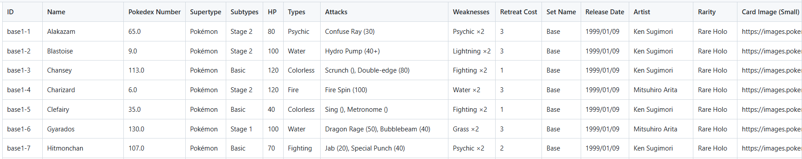
Data Overview
The code for the EDA is here. The first step is to understand what kind of quantitative and quanlitative data are included in the datasets, and what are their limitations. A real rows in the data set looks like the following:
| ID | Name | Pokedex Number | Supertype | Subtypes | HP | Types | Attacks | Weaknesses | Retreat Cost | Set Name | Release Date | Artist | Rarity | Card Image (Small) | Card Image HiRes | TCG Player URL | TCG Price Date | TCG Market Price USD (Normal) | TCG Low Price USD (Normal) | TCG High Price USD (Normal) | TCG Market Price USD (Reverse Holofoil) | TCG Low Price USD (Reverse Holofoil) | TCG High Price USD (Reverse Holofoil) | TCG Market Price USD (Holofoil) | TCG Low Price USD (Holofoil) | TCG High Price USD (Holofoil) |
|---|---|---|---|---|---|---|---|---|---|---|---|---|---|---|---|---|---|---|---|---|---|---|---|---|---|---|
| base1-1 | Alakazam | 65.0 | Pokémon | Stage 2 | 80 | Psychic | Confuse Ray (30) | Psychic ×2 | 3 | Base | 1999/01/09 | Ken Sugimori | Rare Holo | image | hi-res | link | 2025/02/22 | 66.05 | 34.25 | 149.99 |
- Quanlitative Data: Pokedex Number (ID to determine which Pokémon it is), Supertype, Subtype, Types, Attacks, Weaknesses, Set Name, Release Date, Aritist, Rarity
- Quantitative Data: HP, Retreat Cost, TCG High Price USD (Normal), TCG Market Price USD (Recerse Holofoil), TCG Low Price USD (Reverse Holofoil), TCG High Price USD (Reverse Holofoil), TCG Market Price USD (Holofoil), TCG Low Price USD (Holofoil), TCG High Price USD (Holofoil)
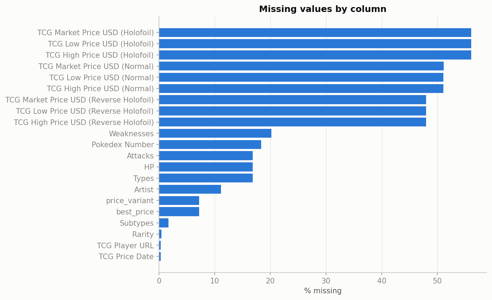
Notice that there are a lot of missing values under the categories TCG High Price USD (Normal), TCG Market Price USD (Recerse Holofoil), TCG Low Price USD (Reverse Holofoil), TCG High Price USD (Reverse Holofoil), TCG Market Price USD (Holofoil), TCG Low Price USD (Holofoil), TCG High Price USD (Holofoil). Normal, holofoil and reverse holofoil refer to the different printing techniques of the card. Normal cards are completely flat and non-reflective, holofoil cards shine only on the artwork, and reverse holofoil cards shine everywhere except the artwork. If a card has missing value of some print, it simpliy indicates that such product doesn't exist. Since the investors can only purchase the existing product of Pokémon cards, these missing values won't affect the analysis. Also, HP/Types/Attacks are ~17-20% missing only because Trainer/Energy cards don't have them, it's not a data problem.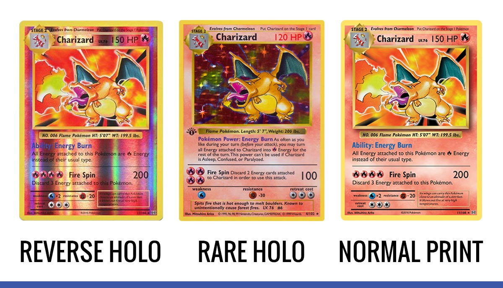
Supertypes, Types of Pokémon, and Rairity, are the major players that can impact the card prices, the following figures demonstrate the distribution of data in these specific categories. About 6/7 of cards in this data set are about Pokémon, about 1/7 of cards are about Trainers, and very few of them are about Evergy. This is a good distribution of cards, because most valuable cards always have Pokémon on them, and on the contrary, the Energy cards always worthless. The data sets inlude the cards with a lot of varieties of Pokémon types, so it makes resourceful data to analyze which types of Pokémon can be most popular/valuable. The data sets include the information about over 7000 Common and Uncommon cards, which are the type of cards that are very cheap. So these data should be dicarded, because they are not so valuable on the market. What are more interesting to check are the cards with at least "Rare" label, because these are the cards that are harder to get on the market. Although they might be cheap at the moment, their prices can increase by a lot within a year. Since the analysis is based on the market data from Feburary to March in 2025, the accuracy of the predication can be varified using the market data now in 2026.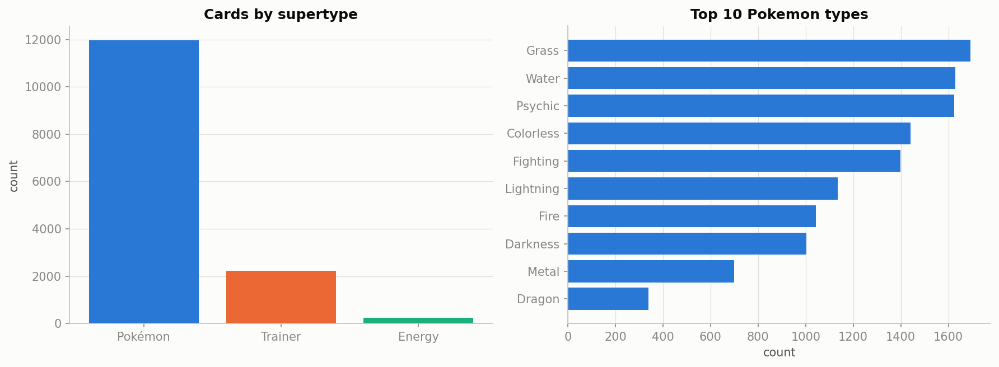
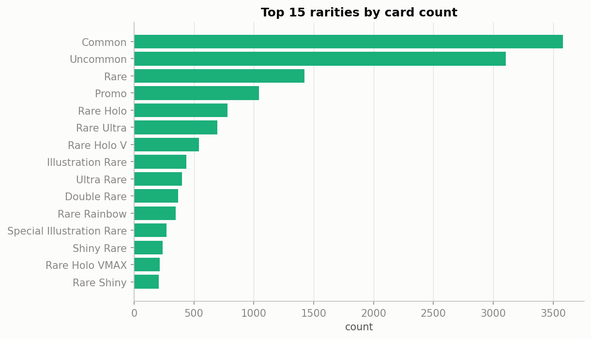
Market Prices Analysis
After know the overall distribution and decomposition of the datasets, it's now time to focus on the key feature of the card, which is the market price. In this section, the market prices are presented using a log scale (base 10), becuase audience can read of the price range easier in this way. In this section, a lot of the figures are naive attemps to figure out the impact of different features on the price. Also some of the analysis are only based on the snap shot of March 2025, because the Feb 2025 is almost identical, no major changes needed to present the figure for both months. This following price distribution shows: 1) The distribution of prices of modern cards is right-skewed, meaning that cards are very cheap in general, most of them are under $10; 2) Vintage cards have a binomial distribution, one peak is around $1 and another peak is around $60 3) There are very few cards that are above $100, and the modern cards and vintage cards are competible. The third point brings very interesting insight about the cards, the high value of a card doesn't depends on vintage or not.
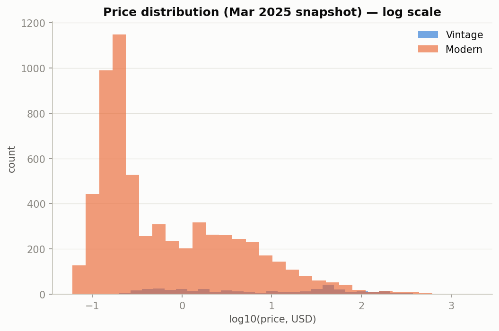
The box-whisker plot below demonstrates the impact of variant prints on the price. As expected, the normal print is the cheapest on average, the reverse holofoil is the second, and the holofoil print is the most expensive one on average. However, the counter intuitive observation is that some of the outliers of normal and reverse holofoil prints can reach up to $1000 roughly, just like the outliers of holofoil print. Therefore, the variant print has some impact on the price of the card, but it's definitely not a dominating factor.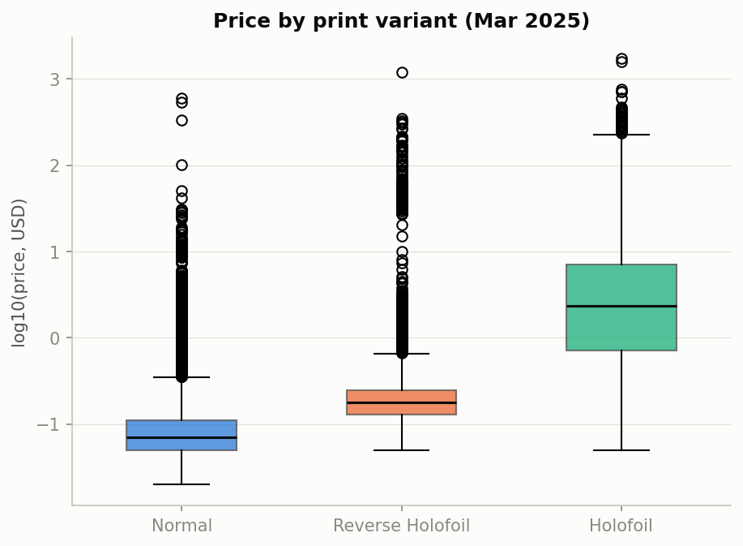
The box-whisker plot below demonstrates the impact of rarity on the price. Among the rarities that we test on, the cards in the least rare category "common" have the lowest average prices, and the cards in the most rare category "illustration rare" have the highest average prices. But the outliers of many rarity can achieve the same market prices. For example, the card with maximal prices in "Rare Ultra", "Promo", and "Rare Holo" can reach about $1000 range. Therefore, the rarity has some impact on the price of the card, but it's definitely not a dominating factor. This is a bit suprising, because chasing the rare card is always been advised to the beginning collectors, but this rule actually doesn't hold very well.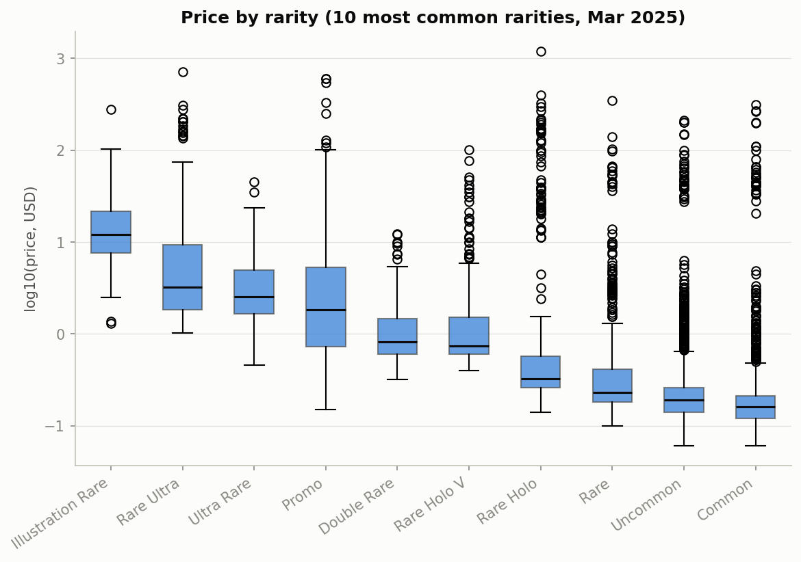
HP and Retreat costs are the gaming features, they usually only matter during a Pokémon card game. Never heard of any discussion about the relevance between the gaming features and the card value. Since it's not widely explored, it's worth to take a closer look at. The following correlation heatmap shows that there is a weak linear correlation between HP and price, and there is no linear correlation between Retreat Cost and price. This just shows that the gaming features have no linear correlation with the price, but no indication that they have no impact on prices. It's just possible that the relationship in between is not linear. This direction needs more investigation.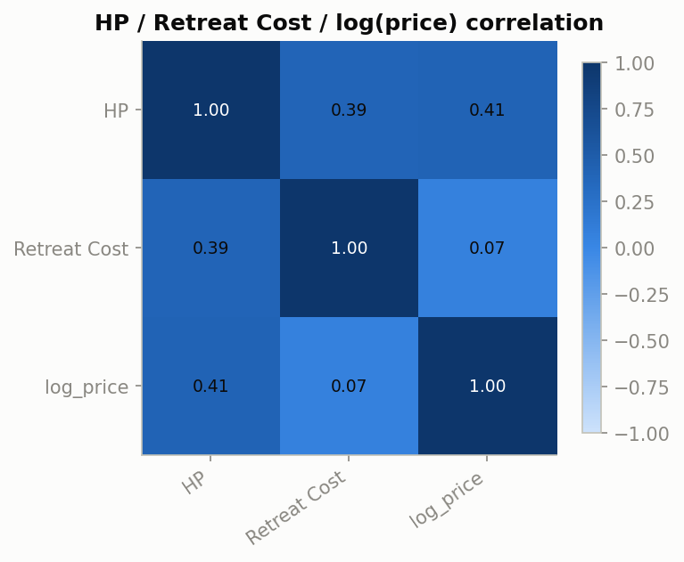
Now, the discussion is going to focus on the change of prices between Feburary and March. The following is the distribution of price changes. It's roughly a normal distribution, with slightly left shift, meaning that more cards have thier prices dropped. But there are more outliers have prices increasing by a lot, than the outliers have prices decreasing by a lot.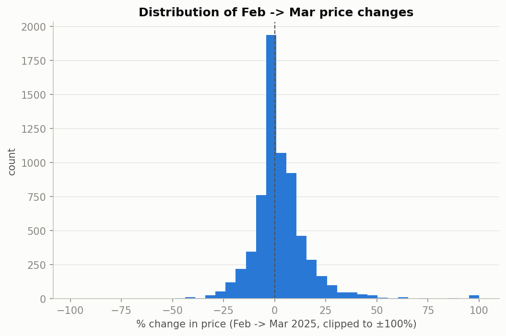
The following filter out some cards that has the biggest gains and declines of their prices. The result is very interesting. The top 10 cards with most gains has increased a lot more than the amount decreased by the top 10 cards with most decline. This shows that if investigators pick the correct card, they can make a lot of money out of it. If you pick the wrong card, you won't lose as much money. This shows that Pokemon market is doing great. The astoning result is that, the card "Grimer" increased prices by more than 8000% within a month. How incredible is that. This well be an important case study to determine what features can contribute to this incredible increasing. If there is a hidden pattern behind this card, can this be generalized to other cards and find their potential. Even just one successful identification of such a card can be extremely profitable for the investigator.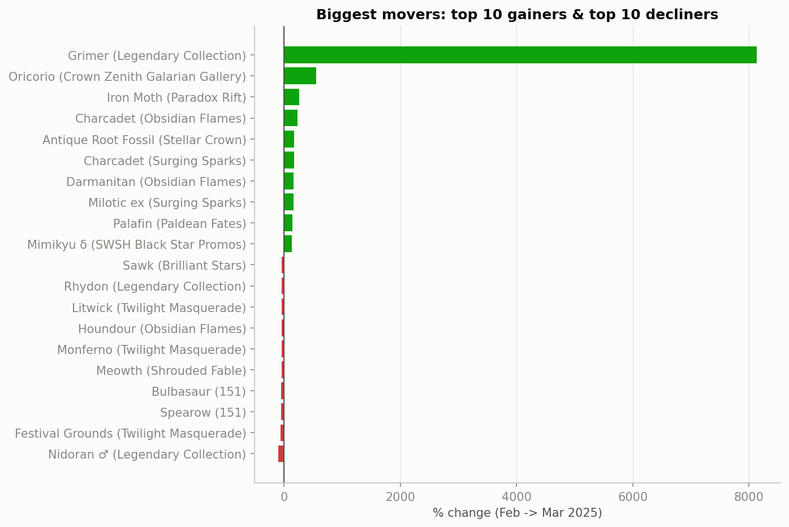
Unknow Analysis
In this section, it lists out some data analysis that are hard to interpret. There is not a clear message can be concluded from the plot, but appending the plots may help future understanding. The first plot shows the sets with most cards in this data set. Does it imply the card from these sets are going to be cheaper, no necessary, how to use the quanlitative variable "Set Name", it's unclear. The second figure shows the scatter plot of card prices. From the previous correlation heatmap, the correlation between HP and price is 0.41, which is a weak correlation. Now, when data points are plotted, a very weak linear relationship can be observed. However, if the relationship is not linear, what could it be? It's not obvious at all.
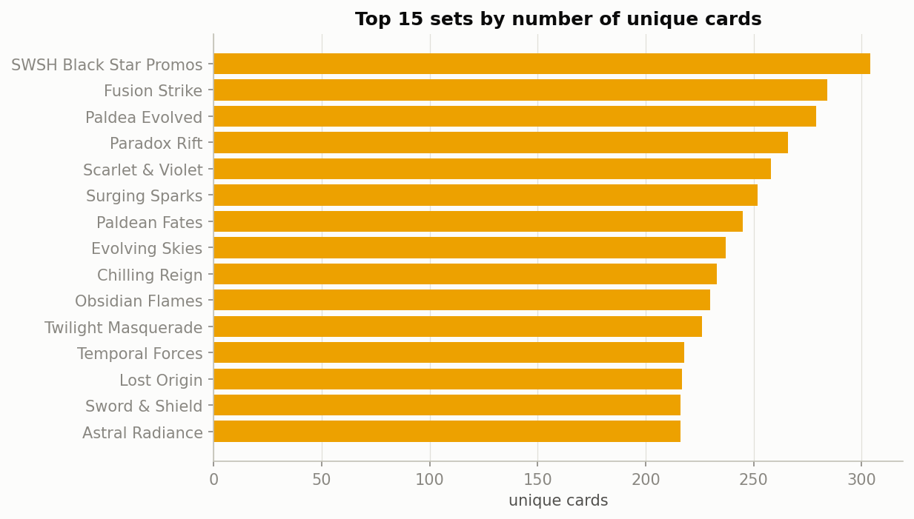
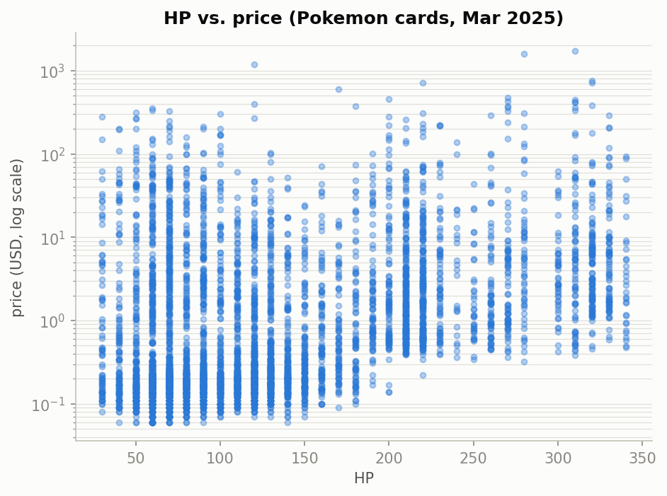
Overview
Partitioning a dataset into different categories is a common way to gathering information. The problem of automatically identifying meaningful groupings in dataset is called clustering. Meaningful groupings can bring interpretation and optimal decisions for each group. In machine learning, this grouping idea is called "clustering". Because the categories in clustering are automatically discovered partitions of an unlabeled dataset, this process is also called unsupervised learnig. Every clustering method needs two choices. The first is a distance measure tha how close two data points are. The second is a rule for turning those distances into groups. Because features with large ranges would dominate any distance, all features here are standardized to mean 0 and standard deviation 1 before clustering. In the following, a couple of common clustering will be discussed, and they will be applied to the Pokémon dataset to produce interpretable results.
- K-means
represents each cluster by its centroid. A point belongs to the cluster whose centroid is nearest. The centroid is the mean of the points assigned to it.
uses Euclidean distance, which is the straight-line distance between two cards in feature space.
$$d_{E}(x, y) = \sqrt{\sum_{i=1}^{n} (x_i - y_i)^2}$$
It is sensitive to magnitude: a card with very high HP and price is far from a card with low values, even if their profiles have the same overall pattern.
K-means pick the number of clusters, k, using the following two ways:
- Elbow. Plot WCSS against k. It always falls as k grows, but the drop flattens once the real groups are covered. The bend (the "elbow") is a sensible k.
- Silhouette. For a data point $i$, let $a_i$ be the average distance from point $i$ to all other points in the same cluster, and let $b_i$ be the average distance from point $i$ o all points in the nearest neighboring cluster. The Silhouette score is $$s_i = \frac{b_i - a_i}{\max (a_i, b_i)} \in [-1,1].$$ $s_i$ close to +1 indicates a strong match, around 0 sits on a border, close to -1 is likely is the wrong cluster. The optimal number of clusters (k) is the k with highest average Silhouette score.

- Hierarchical Clustering
is another unsupervised technique that groups data into a clusters based on similarity. It builds a tree‑like structure (dendrogram) that helps visualize relationships and decide the optimal number of clusters.
It shows how individual data points or groups of data merge together. The bottom shows each data point as its own group and as we move up, similar groups are combined.
Height is the distance at which two clusters merged. Low joins are tight groups; tall joins bridge groups that are far apart. Cut the tree with a horizontal line. The number of vertical strands it crosses is the number of clusters.
The cut in the below figure sits in the tall gap and gives two clusters: {A,B} and {C,D,E}.
The hierarchical clustering uses cosine distance. It ignores length and compares direction only: two cards are close if their features are high and low in the same places, regardless of how extreme they are.
$$d_{\cos}(x, y) = 1 - \frac{x \cdot y}{\lVert x \rVert \, \lVert y \rVert}$$
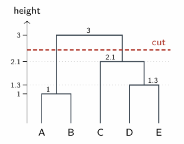
- Define market segments. Name each cluster by its profile and compare price behavior across segments. This shows whether value is driven by gameplay stats, age, or rarity.
- Find mispriced cards. Within a cluster, cards with similar stats should have similar prices. A card priced well above or below its cluster's median is a candidate for being over- or undervalued.
- Spot momentum. Feb-to-Mar price change is a clustering feature. Cards whose change differs sharply from their cluster's mean change are worth tracking as the next monthly snapshot arrives.
Data Prep
The data is 5,584 Pokémon cards from TCGplayer price snapshots in February and March 2025, combining 6,345 modern and 868 vintage card records. Trainer and Energy cards were dropped because they have no HP or attacks, as were cards with no price in either month. The unlabeled numerical features that are used for clustering are listed below.
| Numerical Feature | How it is built |
|---|---|
| HP | Card hit points |
| Retreat cost | Energy needed to retreat |
| Number of attacks | Count of attacks on the card |
| Max damage | Highest damage number among its attacks |
| Log price | log(1 + March market price) |
| Price change | March price / Feburuary price - 1 |
| Card age | Years from release data to March 2025 |

Code
The code of clustering analysis can be found here. Section 1 and 2 are used to preprocessing the data. Section 3 applies elbow and Silhouette methods to find the optimal number of clustering (k). Section 4 constructs the Hierarchical clustering with cosine distance. Section 5 plots the clustering from k-means and H-clust on the PC1 and PC2 space, compare their difference and describe the feature of each clusters.
Results
Choosing k for k-means. The elbow curve has no sharp bend, so the optimal k cannot be explicitly determined from this method, which suggests the groups overlap rather than separate cleanly. The Sihouette score peak at k = 3, so it suggests that the number of clusters should be 3. However, because the elbow method and Sihouette method didn't agree, it is necessary to use the third method to verify.
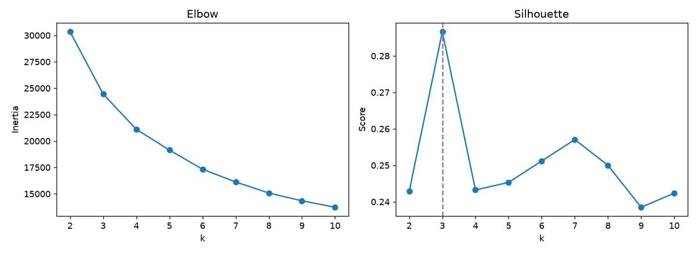
The gap-statistic method is another common way to determine the optimal k, where the optimal k has the peak gap-statistic. Plot the k against the gap-statistic gives: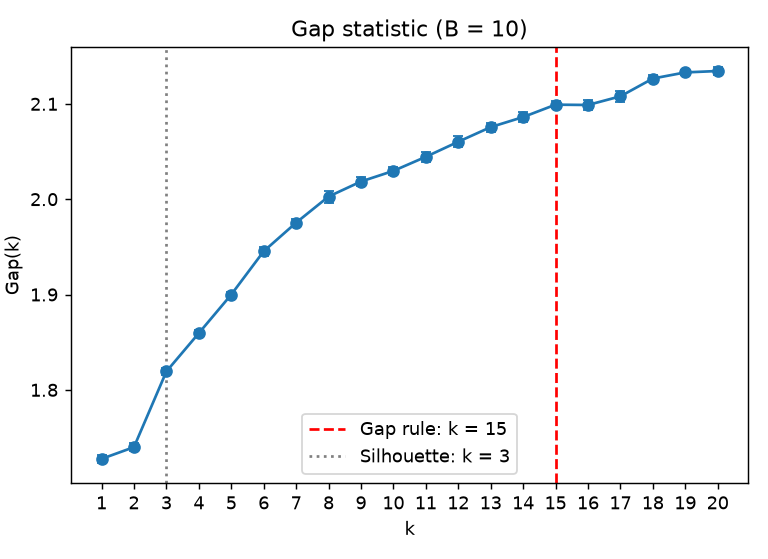
The gap keeps rising from k = 1 to k = 20. It never peaks. The rule is first met at k = 15, and only by +0.006, which is about the size of the simulation noise. the gap statistic found no clear stopping point, which shows the market is a continuum rather than well-separated groups. The biggest structural gain is at k = 3, matching the silhouette score, so k = 3 is kept. At $k=3$, the k-mean clustering is showed below. K-means 0 is rather dense and compact. K-means 1 is dense and compact, but also includes a small fraction of outliers. K-means 2 is more scattered and has less data points. Hierarchical tree.
The dendrogram shows the last 30 merges, numbers on the x-axis in parentheses are card counts. The three colors are the three clusters at the cut.
The three colors are the three clusters at the cut. The top merge happens near cosine distance 1.2, meaning the main branches point in nearly opposite directions in feature space.
The cosine silhouette score at 3 clusters was 0.350.
Hierarchical tree.
The dendrogram shows the last 30 merges, numbers on the x-axis in parentheses are card counts. The three colors are the three clusters at the cut.
The three colors are the three clusters at the cut. The top merge happens near cosine distance 1.2, meaning the main branches point in nearly opposite directions in feature space.
The cosine silhouette score at 3 clusters was 0.350.
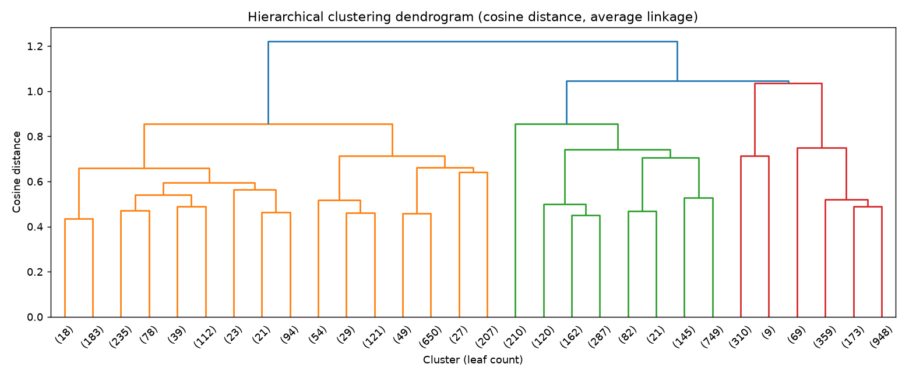
Side-by-side comparison. Each card is plotted on the first two principal components. Colors are assigned separately in each panel. K-means (left) cleanly separates the vintage cards at the top. Cosine clustering (right) folds them into a larger lower group. K-means cluster 2 and hierarchical cluster 0 share 1711 cards, so the heavy-hitter group is stable across both distance measures.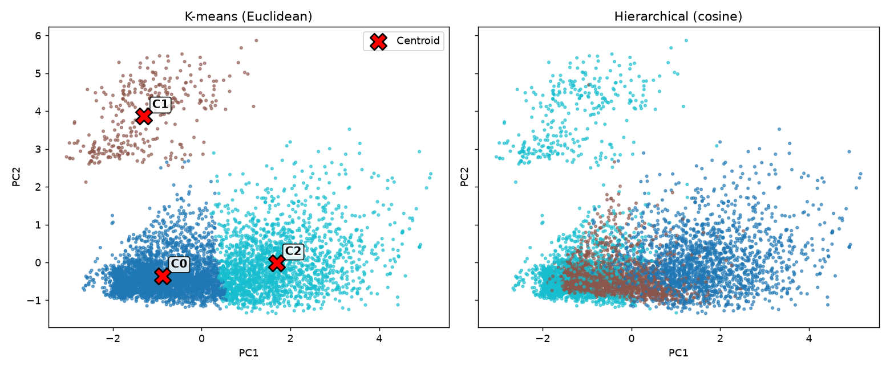
Both methods were cut to 3 clusters. They agree on a high-power modern group but split the remaining cards differently: k-means isolates vintage cards, while cosine clustering groups them with modern cards that have a similar low-power profile. The below table shows the mean/media of each numerical feature in the clusters of k-means and H-clusters. These average statistics can summarize the main characteristics of each clusters, and produce a descriptive label for each cluster.| Cluster | Cards | Mean HP | Mean max damage | Median price (USD) | Mean age (yrs) | Vintage share |
|---|---|---|---|---|---|---|
| K-means 0: modern low power | 3313 | 90 | 44 | 0.20 | 2.5 | 0% |
| K-means 1: vintage | 314 | 62 | 30 | 13.22 | 24.7 | 100% |
| K-means 2: modern heavy hitters | 1957 | 213 | 146 | 1.44 | 2.7 | 0% |
| H-clust 0: heavy hitters | 1940 | 217 | 140 | 1.61 | 2.8 | 0% |
| H-clust 1: mid-range, more attacks | 1776 | 96 | 61 | 0.19 | 2.5 | 0% |
| H-clust 2: low-power, one attack | 1868 | 77 | 33 | 0.22 | 6.2 | 17% |
Conclusions
The k-means clustering found three clear, stable groups in the card market (vintage, modern heavy hitters, modern commons), and it showed that collector value follows age much more than gameplay power. The earlier goal of applying the clustering analysis aims to answer the questions: 1) define market segments; 2) find mispriced cards; 3) spot momentum. Unfortunately, the analysis can only partially answer the first question. The three k-means clusters are clear and easy to name, and their prices differ a lot:
| Cluster | Cards | Median price (USD) | Mean Feb to Mar change |
|---|---|---|---|
| Modern low-power | 3313 | 0.20 | +2.6% |
| Vintage | 314 | 13.22 | +2.9% |
| Modern heavy hitters | 1957 | 1.44 | +4.1% |
Overview
PCA takes a dataset with many possibly correlated variables and map it in a eigenspace. The new axes, called principal components, are chosen so that: 1) The first principal component points in the direction where the data varies the most; 2) all principal components are orthogonal to each other; 3) the components are uncorrelated with one another. Usually, the first two principal components take account most of the variance, so PCA on a two-dimensional version of the data that keeps most of its structure.
The PCA follows the following procedure: 1) standardize the data; 2) Compute the covariance matrix Σ; 3) find the eigenvectors and eigenvalues; 4) sort the eigenvectors by eigenvalue, largest first; 5) choose the top k eigenvectors; 6) project the data.
Eigenvalues and eigenvectors are the heart of PCA. For a square matrix A, an eigenvector v is a nonzero vector whose direction does not change when A is applied to it. It only gets stretched or shrunk:
$$\mathbf{A}\mathbf{v} = \lambda \mathbf{v}$$
The scalar λ is the corresponding eigenvalue. It tells you how much v is stretched.
When A is the covariance matrix Σ, eigenvectors and eigenvalues have a direct statistical meaning.
Eigenvector is a direction in feature space, i.e. a principal component. Its entries (“loadings”) show how much each original feature contributes to it.
Eigenvalue is the variance of the data along that direction, i.e. how much information that component carries. Therefore, the top eigenvector is the direction of maximum variance.
 Dimensionality reduction means transforming data from a high-dimensional space (many features) into a lower-dimensional space while keeping as much meaningful structure as possible.
Humans can only see 2 or 3 dimensions. Projecting a 50-feature dataset onto PC1 and PC2 gives a scatter plot where clusters, outliers, and trends often become visible right away.
Low-variance components often capture mostly measurement noise. Dropping them and reconstructing the data acts as a denoising filter. Storing k components instead of d features reduces storage.
This is the idea behind “eigenfaces” in image compression and recognition.
Dimensionality reduction means transforming data from a high-dimensional space (many features) into a lower-dimensional space while keeping as much meaningful structure as possible.
Humans can only see 2 or 3 dimensions. Projecting a 50-feature dataset onto PC1 and PC2 gives a scatter plot where clusters, outliers, and trends often become visible right away.
Low-variance components often capture mostly measurement noise. Dropping them and reconstructing the data acts as a denoising filter. Storing k components instead of d features reduces storage.
This is the idea behind “eigenfaces” in image compression and recognition.
The reason of using the dimensionality reduction method, such as PCA, is the curse of dimensionality, which describes how many things go wrong as the number of features grows.
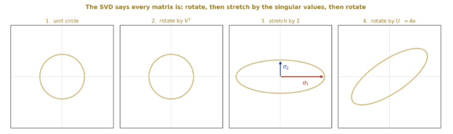
Data Prep
The preprocessing of data for PCA analysis is basically the same as the that for clustering analysis. The same unlabeled numerical features are merged together and used in the analysis.
Section 1 of the code are used to preprocessing the data. The data that will be used for clustering analysis can be found here.
The more detailed discussion of the preprocessing of data can be found in Section "Data Prep" under tab "Clustering".
Code
The code of clustering analysis can be found here. Section 1 are used to preprocessing the data. Section 2 applies PCA to all the numerical components that are kept. Section 3 plots the scree plot, loadings heatmap, and biplot following this online guidance and this blog for PCA visualization.
Results
Two components summarize most of the structure in the card data: PC1 is card power (31% of variance) and PC2 is collectible value (19%). Together they explain 50% of the variance. Five components are needed to reach 80%.
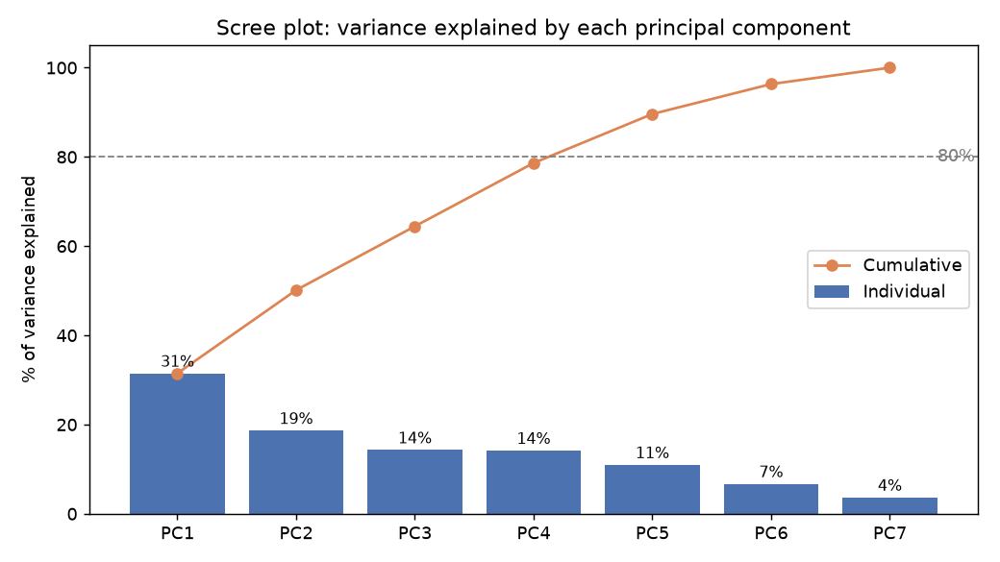
The loadings are correlations between each feature and each component; values near ±1 mean the feature drives that component. The main contributor of the top 4 principle components are summarized in the following table, and the interpretation of each component and the highest-scoring cards are included.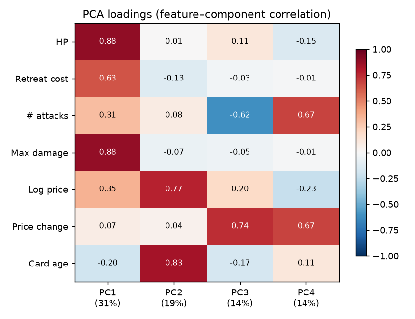
| Component | Variance | Driven by | Interpretation | Highest-scoring cards |
|---|---|---|---|---|
| PC1 | 31% | HP (0.88), max damage (0.88), retreat cost (0.63) | Card power: big, hard-hitting cards score high | Charizard VMAX, Charizard ex, Zacian V-UNION |
| PC2 | 19% | Card age (0.83), log price (0.77) | Collectible value: older cards are worth more | Vintage Charizard, Mewtwo, Eevee, Charmander |
| PC3 | 14% | Price change (0.74), # attacks (−0.62) | Price momentum, mostly in one-attack cards | - |
| PC3 | 14% | # attacks (0.67), price change (0.67) | Mix of the same two features as PC3 | - |
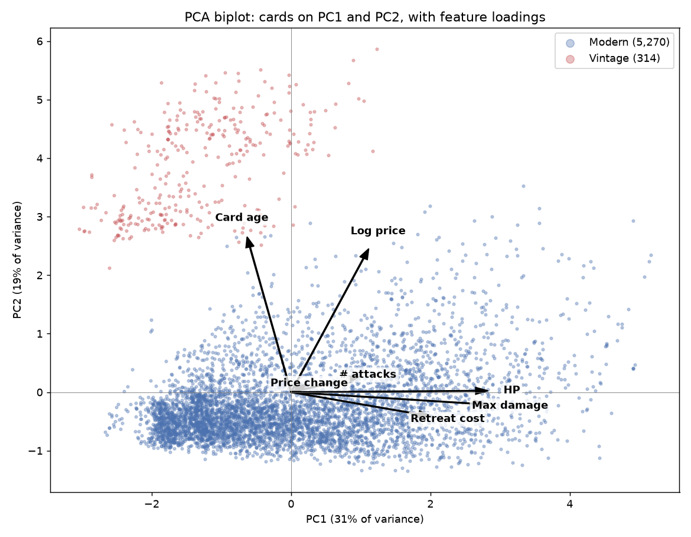
Conclusions
The card data has two main dimensions, gameplay power and collectible value, and they are nearly independent. Month-to-month price change sits outside both, so the PCA confirms it can’t be explained by the card features we have. Two components capture 50% of the information in the seven variables. Three pass the eigenvalue-above-1 rule, and five are needed to reach 80%. The features are only loosely correlated, so PCA can summarize them but not collapse them into one or two numbers without losing a lot. What this means for next steps:
- Collector value depends on age (and rarity), not gameplay. Any price model needs rarity and era as inputs, not just stats.
- Drop one of HP or max damage before clustering again, or cluster on the first 3–5 PC scores. Otherwise power is double-counted.
- Price movement needs its own analysis with more monthly snapshots. The current features can’t explain it.
Overview
Naïve Bayes (NB) is a family of supervised classifiers built on Bayes' theorem. Given a record with features $x = (x_1, x_2, ..., x_n)$, it asks: for each possible class $C$, how probable is that class given what we see? It then predicts the class with the highest probability. $$P(C | x) = P(C) · P(x | C) / P(x)$$ $$\text{Naive assumption:} \quad P(x | C) = P(x_1 | C) · P(x_2 | C) \cdot … \cdot P(x_n | C)$$ $$\text{Prediction:} \quad \hat{y} = argmax_C [ \log P(C) + Σ_i \log P(x_i | C) ]$$ The "naive" part is the assumption that every feature is conditionally independent of the others once the class is known. That is rarely true. A card's rarity and its subtype (VMAX, ex) clearly move together. Even so, NB works well in practice because it only needs the correct class to come out on top, not perfectly calibrated probabilities. The model trains in one pass by counting, needs little data, scales to thousands of features, and its learned probabilities are easy to read.
$P(C)$ is the prior: how common each class is in the training data. $P(x_i | C)$ is the likelihood of a feature within a class. Working in log space avoids multiplying many tiny probabilities into numeric underflow.
NB can be used for the following applications:
- Text classification: spam filtering, sentiment analysis, topic and news tagging, where documents become word-count vectors.
- Fast baselines for any categorical or count-based classification problem before trying heavier models.
- Recommendation and filtering (for example, "will this user like this item").
- Medical and risk screening from symptom or attribute checklists.
- Here: price-tier prediction for trading cards from their attributes.
Multinomial vs. Bernoulli Naïve Bayes
The variants differ in how they model P(xᵢ | C), and so in what kind of data they accept.
| Multinomial NB | Bernoulli NB | |
|---|---|---|
| Feature type | Non-negative counts or frequencies | Binary: yes (1) or no (0) |
| Likelihood | $P(x_i|C) = (N_{C_i} + \alpha) / (N_C + \alpha \cdot n)$ | $P(x|C) = \prod_i p_i^{x_i} \cdot (1-p_i)^{1-x_i}$ |
| Typical use | Word counts in long documents, counted-encoded attributes | Yes/no checklist, word presence |
In the Multinomial formula, $N_{C_i}$ is the total count of feature $i$ in class $C$, $N_C$ is the total of all feature counts in $C$, and $n$ is the number of features. In the Bernoulli formula, $p_i$ is the fraction of class-$C$ records in which feature $i$ is present.
Laplace smoothing (α). If a feature never appears with a class in training, its raw likelihood is 0, and that single zero wipes out the whole product. Adding $\alpha$ (here $\alpha = 1$) to every count keeps every probability above zero. Both models in this tab use α = 1.
Data Prep
Supervised learning needs labeled data. Each record must carry the correct answer (the label) so the model can learn which feature patterns go with which class. Rows without a label cannot be used to train or to test, because there is nothing to learn from or check against.
The dataset includes the information about 7213 cards in total, and there are 522 cards had no market price at all. The value of the cards is the main interest of this project, hence the labeling is based on the market price, so the cards with no market price were dropped before modeling. That leaves 6691 labeled cards. The labeled dataset can be found here.
| Price Tier | Rule | Cards Number | Proportion |
|---|---|---|---|
| Low | price $<\$1$ | 4169 | 62.3% |
| Mid | $\$1 \leq$ price $< \$10$ | 1767 | 26.4% |
| High | price $\geq \$10$ | 755 | 11.3% |
Converting every feature to non-negative counts is also necessary. Python's sklearn.naive_bayes.MultinomialNB accepts only numeric, non-negative values, which it treats as counts. Mixed text and numbers have to be converted first:
- One-hot (0/1) columns for Era, Supertype, energy Type, Rarity, and release year.
- Multi-hot columns for Subtypes, since one card can be several at once ("Basic, V" sets both
sub_Basicandsub_V). - Binned one-hot columns for HP and for the largest attack damage. Raw HP values like 330 would otherwise outweigh every 0/1 feature in a count-based model.
- Small integer counts for number of attacks and retreat cost (0 to 5).
Name, ID, artist, image links, and the price columns were left out. ID and name are identifiers, not attributes. The price columns are where the label came from, so including them would leak the answer into the features. The labeled data with numeric features can be found here.
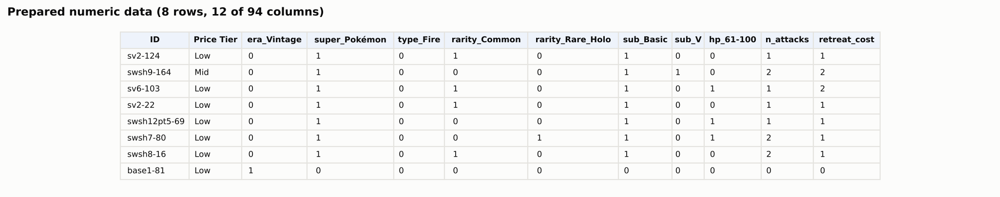
Next is to splitting the dataset into a training set and testing set.
- Training Set (70%, 4683 cards) is the only data the model sees while learning its priors and likelihoods.
- Testing Set (30%, 2008 cards) is held back and used once, to measure accuracy on cards the model has never seen.
- Stratified sampling keeps the Low / Mid / High mix the same in both sets, which matters here because High cards are only about 11% of the data.
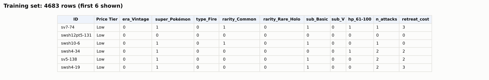
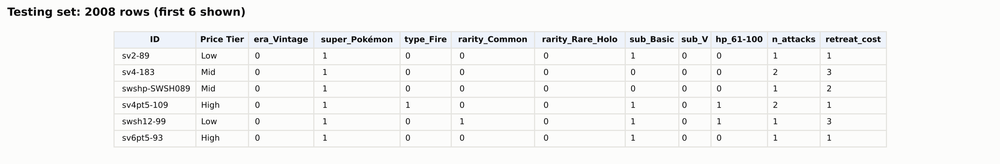
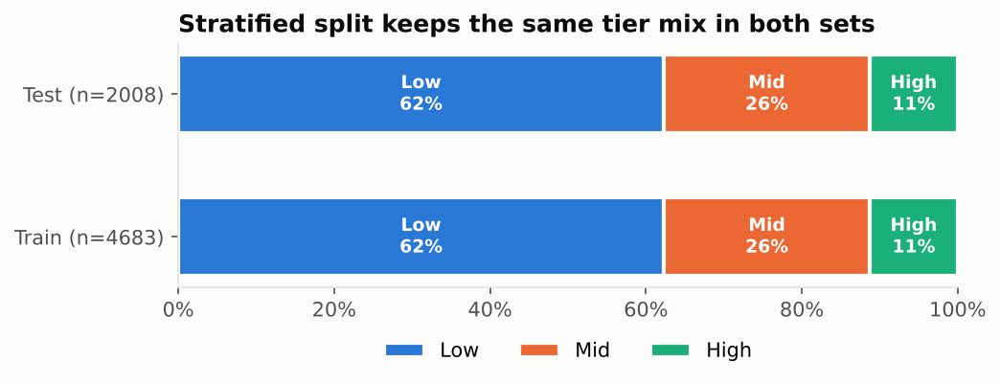
In the following, the price tires are color-coded in all the figures. "Low" is in blue, "Mid" is in orange, and "High" is in green.
Code
The code of naive bayes analysis can be found here. Section 1 and 2 are used to preprocessing the data: the cards are categorized into high, mid, low price tires and the quanlitative features are converted to numerical values. Section 3 splits the data into training set and testing set. Section 4 train and evaluate the model using Multinomial NB and Bernoulli NB. Since the Multinomial NB performs better than Bernoulli does, then it is chosen as the main model. Section 5 plots their confusion matrices, and their feature importance associated with different price tier.
Results
On the 2,008 held-out test cards, Multinomial NB scored 80.4% accuracy. Always guessing the most common tier (Low) would score 62.3%, so the model adds about 18 percentage points over that baseline. Bernoulli NB, trained on the same features reduced to present/absent, scored 75.4%.
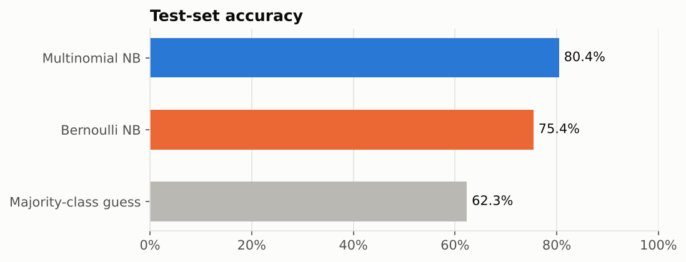
Confusion Matrix Rows are each card's actual tier; columns are what the model predicted. The diagonal holds the correct predictions. Shading follows the percentage of each row, so the smaller High tier reads as clearly as Low.
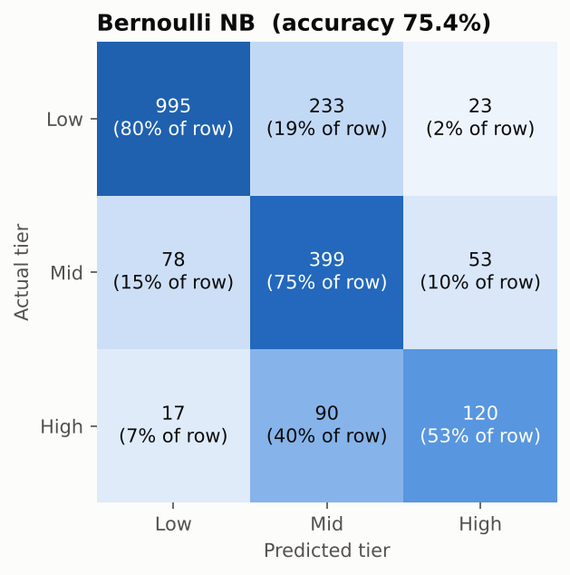
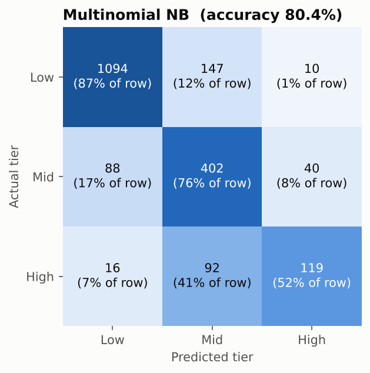
Based on their confusion matrix, the Multinomial NB has higher accuracy of classifying the cards into their price tire. The Multinomial NB demonstrates the following results:
- Low cards are easy. 87% of bulk cards were caught, with 91% precision. Commons and uncommons are almost always under $\$1$.
- Mid is the catch-all. 76% recall, but it also absorbs mistakes from both sides: some Low cards look like Mid (holo rares, V cards), and many High cards are predicted Mid.
- High cards are the hard case. Only 52% were recognized. Two-fifths were labeled Mid. When the model does say High, it is right 70% of the time.
- Errors are almost always one tier off. Only 26 test cards were confused between Low and High.
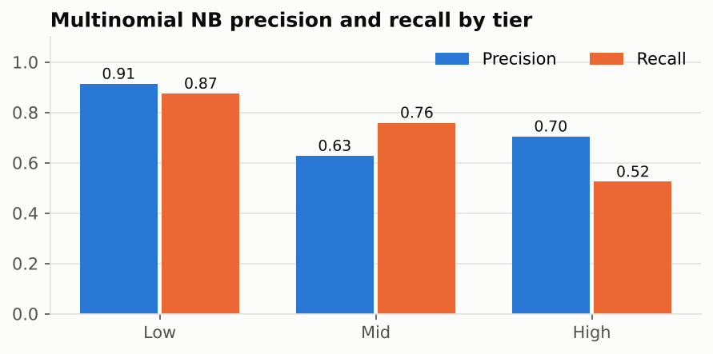
What the model learned. Because NB stores a probability for every feature in every class, we can read it directly. The chart ranks features by how much more likely they are within a tier than in the other two (difference in log P(feature | tier)).
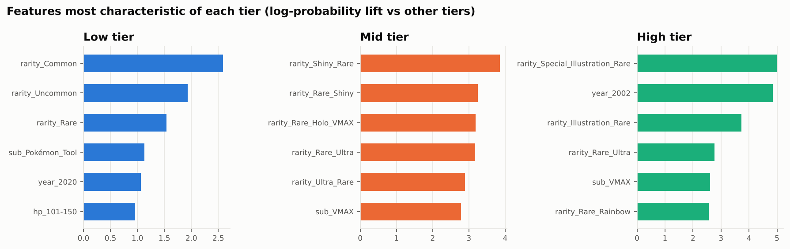
Low tier is defined by ordinary rarities. Mid tier is defined by shiny, VMAX, and ultra-rare printings. High tier is defined by Special Illustration Rare, Illustration Rare, and 2002 release year (Legendary Collection).
Era matters. Accuracy was 81.7% on modern test cards but 61.1% on vintage ones. Vintage prices depend on condition, nostalgia, and specific Pokémon (a Base Set Charizard against a Base Set Ponyta), and those things are not in the printed attributes. Vintage cards are also only about 6% of the training data.
Conclusions
A card's printed attributes alone predict its price tier correctly about 4 times in 5. That is well above guessing, from a model that trains in under a second. For a collector, a seller sorting a box, or anyone looking at the hobby's economics, this says several things:
- Rarity is the main driver of value. The rarity symbol carried most of the signal. Common and Uncommon cards are reliably bulk, which supports the usual practice of sorting by rarity first.
- Modern premium printings are what sell. Special Illustration Rare, Illustration Rare, Hyper Rare, and rainbow or shiny printings mark the cards most likely to reach $\$10$ or more. Ordinary holos and V cards mostly land in the $\$1–\$10$ range.
- Set age is a value signal. Release year was among the strongest High-tier features. Older vintage sets (especially Legendary Collection, 2002) carry a premium regardless of the card's game stats.
- Game stats barely matter for price. HP, damage, retreat cost, and energy type ranked far below rarity and era. Collectors pay for scarcity and artwork, not playability.
- The model can't spot the chase cards inside a rarity. About half of High-tier cards were underpriced as Mid. What separates a $15 card from a $3 card of the same rarity is usually the specific Pokémon (Charizard, Umbreon, Pikachu), the artwork, and demand. Those are not among these features. Adding the Pokémon's name or popularity, or the artist, would likely help most for the High tier and for vintage cards.
In practical terms, the model can be used as a fast first-pass sorter. A card it calls Low can be put in bulk with confidence. A card it calls Mid or High is worth looking up individually.
Overview
A decision tree is a supervised model that predicts a label by asking a sequence of yes/no questions about the features. Each internal node tests one feature against a threshold ("is the rarity tier above 4?"), each branch is an answer, and each leaf holds a prediction: the majority class of the training rows that ended up there (for classification).
Trees are used for classification (spam or not, which price tier), regression (predicting a price directly), and as the building block of stronger ensembles such as Random Forests and gradient-boosted trees. Their biggest strength is that they are readable. Anyone can follow a path from the root to a leaf and see exactly why a card was labeled "High". They also handle mixed feature types, need no scaling, and capture interactions automatically, since a question asked lower in the tree only applies to the cards that reached that branch.

Anatomy of a decision tree, using questions the real model in section (d) actually learned. A card enters at the root and follows one path down to a leaf.
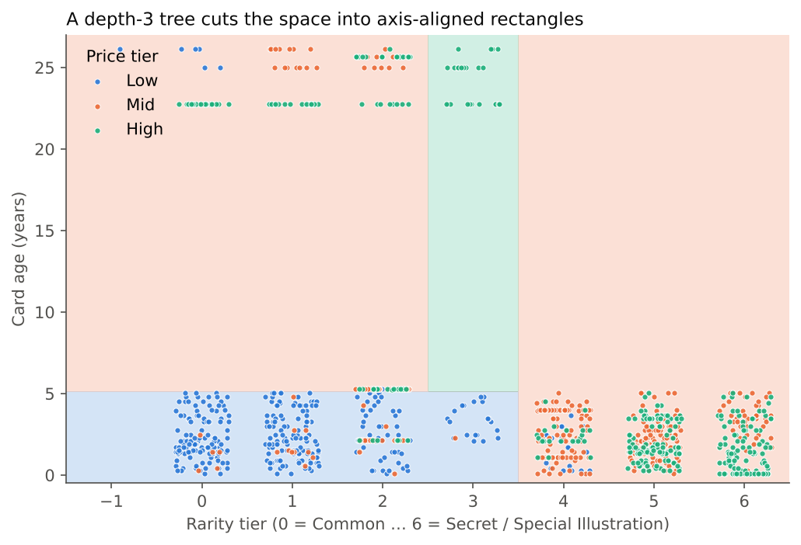
What a tree does geometrically. Fit on only two features (rarity tier and card age), a depth-3 tree carves the space into axis-aligned rectangles and gives each one a label. Old holo rares (rarity 3, >5 years) become a High region; modern ultra and secret rares (4–6) land in Mid, where High and Mid cards are badly mixed. That mixing is what impurity measures.
Gini, Entropy and Information Gain.To grow a tree, the algorithm has to decide which question to ask at each node. It tries every feature and every candidate threshold and keeps the split whose children are the most "pure", meaning each child is dominated by one class. Gini impurity and entropy are two ways to put a number on impurity; information gain measures how much a split reduces it. The follwoing are the formulas, where $p_i = $ share of class $i$ in a node.
$$\text{Gini(node) } = 1 − \sum_i p_i^2, \qquad 0 = \text{pure}, \quad 0.667 \text{ max for 3 classes}$$ $$\text{Entropy(node)} = − \sum_i p_i · \log_2 p_i, \qquad 0 = \text{pure}, \quad 1.585 \text{max for 3 classes}$$ $$\text{Gain(split) } = \text{Impurity(parent) } − \sum_k (n_k / n) \cdot \text{Impurity(child_k)}$$Both measures are zero when a node holds a single class and largest when the classes are evenly mixed. Gini is slightly cheaper to compute (no logarithm) and is scikit-learn's default; entropy comes from information theory and penalizes mixed nodes a little more sharply. In practice they usually pick the same or very similar splits. The weighted average in the gain formula matters: a split that creates one tiny pure child and one huge mixed child should not score well, so each child counts in proportion to its size.
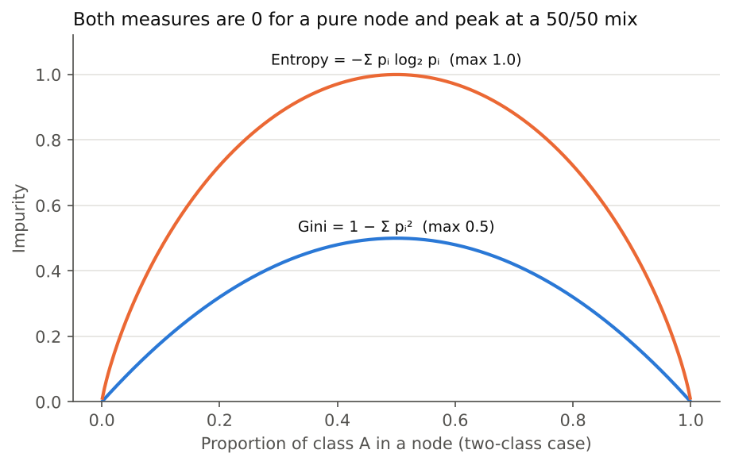
Worked example: which question splits ten cards better? Take ten cards: 5 are High and 5 are Low. Compare two candidate questions.
| Node | Cards | High / Low | Gini | Entropy |
|---|---|---|---|---|
| Parent (all ten) | 10 | 5 / 5 | $1-(0.5^2 + 0.5^2) = 0.500$ | 1.000 |
| Split A: "Is the card vintage?" | ||||
| Vintage | 4 | 3 / 1 | $1-(0.75^2 + 0.25^2) = 0.375$ | 0.811 |
| Modern | 6 | 2 / 4 | $1-(0.333^2 + 0.667^2) = 0.444$ | 0.918 |
| Split B: "Is rarity Ultra Rare or higher?" | ||||
| Ultra higher | 4 | 4 / 0 | $0.000$ | 0.000 |
| Below Ultra | 6 | 1 / 5 | $1-(0.167^2 + 0.833^2) = 0.278$ | 0.650 |
Information gain with entropy:
- Split A: $1.000 − (0.4 × 0.811 + 0.6 × 0.918) = 0.124$
- Split B: $1.000 − (0.4 × 0.000 + 0.6 × 0.650) = 0.610$
Information gain with Gini:
- Split A: $0.500 − (0.4 × 0.375 + 0.6 × 0.444) = 0.083$
- Split B: $0.500 − (0.4 × 0.000 + 0.6 × 0.278) = 0.333$
Split B wins under both measures, because it isolates a pure group of four High cards. The tree would ask the rarity question first.
Why there are infinitely many possible trees
- Continuous thresholds. A numeric feature like card age can be cut at any real number. Any cut between two neighbouring training values (say 13.80 and 13.99 years) sorts the training data the same way, but each is a different tree that will treat new cards differently.
- Stopping choices. Maximum depth, minimum samples per leaf, minimum gain to split, and pruning strength can all vary, and each setting produces a different tree. Without limits, a tree can keep splitting until every leaf is pure.
- Criterion and features. Gini, entropy or log-loss; which features are allowed; how categorical values are encoded.
- The data itself. A different random training sample, or a slightly different label threshold, changes the best split at the root, and every split below it changes too. Trees are known for this instability.
Data Prep
Supervised learning needs labeled data. Just like Naive Bayes, the cards are labeled as "Low", "Mid", and "High" price tiers, leaving 6691 labeled cards. Because scikit-learn trees only accept numbers. Text columns were converted into ordinal codes, 0/1 flags, counts, or measurements. The price itself is never used as a feature, since the label is derived from it. Name, set and price stay in the files for reference only. The labeled data with numeric features can be found here.
| Feature | Built from | Meaning |
|---|---|---|
rarity_rank | Rarity | 0 Common, 1 Uncommon, 2 Rare/Promo, 3 Rare Holo, 4 V/Double/Shiny, 5 Ultra/Illustration, 6 Secret/SIR/Hyper |
n_printings | Price columns | How many versions are sold (1 = holo only, 2 = normal + reverse holo) |
card_age_yrs | Release Date | Years between release and the price date |
is_vintage | Era | 1 for the 1999–2002 sets |
set_position | ID | Card number ÷ highest number in its set (near 1 = secret-rare slots) |
pokemon_popularity | Name | How many cards feature that Pokémon (Pikachu, Charizard and Eevee score high) |
hp, retreat_cost | HP, Retreat Cost | Gameplay stats (0 for Trainers and Energy) |
n_attacks, max_damage | Attacks | Number of attacks and the largest printed damage |
is_pokemon, is_trainer, is_supporter, is_rule_box | Supertype, Subtypes | 0/1 flags; rule box = V, VMAX, VSTAR, ex, GX, Radiant |
pokedex_no | Pokedex Number | National Dex number (0 if not a Pokémon) |
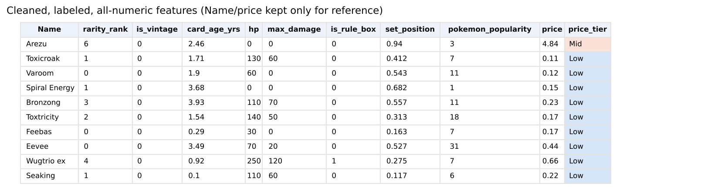
Next is to splitting the dataset into a training set and testing set.
- Training Set (75%, 5018 cards) A tree that is scored on cards it trained on is being asked about answers it has already memorized, so the score says nothing about new cards.
- Testing Set (25%, 1673 cards) This is a disjoint set from the training set. Only the test score is an honest estimate of how the model will do on cards it has never seen.
- Stratified sampling keeps the Low / Mid / High mix the same in both sets, which matters here because High cards are only about 11% of the data.
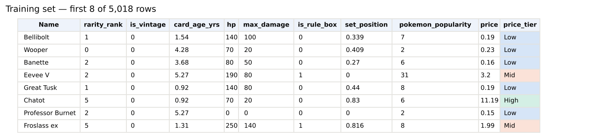
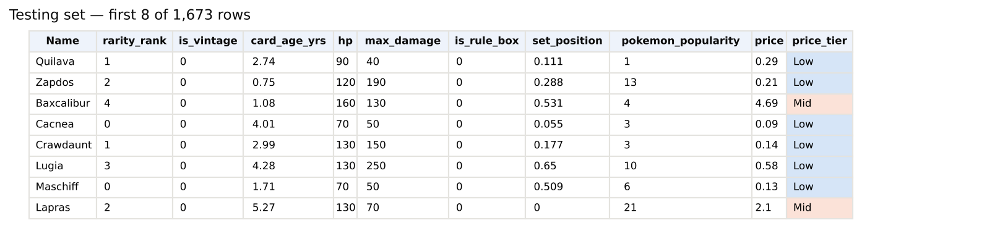
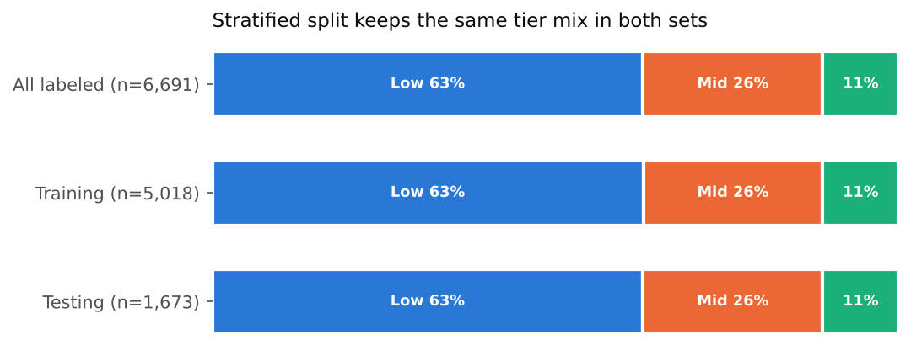
In the following, the price tires are color-coded in all the figures. "Low" is in blue, "Mid" is in orange, and "High" is in green.
Code
The code of decision tree analysis can be found here. Section 1 and 2 are used to preprocessing the data: the cards are categorized into high, mid, low price tires and the quanlitative features are converted to numerical values. Section 3 splits the data into training set and testing set. Section 4 constructs 4 trees and the tree without depth limit is overfitting, so it's omitted. The performance of the rest of three trees are scored using Gini and Entropy. Section 5 plots the tree structures, their confusion matrices, and their feature importance based on entropy and Gini.
Results
Every tree was trained on the same 5,018 cards and scored on the same 1,673 unseen test cards. Always guessing the most common tier (Low) would score 62.8%, so that is the bar to beat.
| Tree | Criterion | Settings | Leaves | Train acc. | Test acc. | High recall |
|---|---|---|---|---|---|---|
| Tree 1 | Gini | depth 3, all features | 7 | 80.3% | 81.1% | 16% |
| Tree 2 | Entropy | depth 6, ≥10 cards per leaf | 39 | 86.8% | 86.5% | 65% |
| Tree 3 | Gini | depth 4, rarity removed | 13 | 82.2% | 80.6% | 37% |
| Tree 4 | Gini | no depth limit | 618 | 99.8% | 86.2% | 76% |
Tree 1: Gini, depth 3 The smallest tree is the easiest to read. Its first question is whether a card is sold in more than one printing. Commons and uncommons almost always come in normal and reverse-holo versions, and 95% of those are Low. Among those multi-printing cards, anything older than 13.9 years (the vintage sets) goes straight to a pure High leaf of 77 cards. On the single-printing side it uses rarity and age, but every one of those leaves predicts Mid. That makes Tree 1 cautious: it never confuses Low with High, yet it catches only 29 of the 185 High test cards.
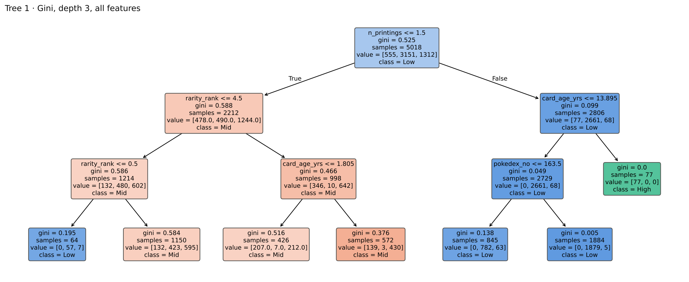
Tree 2: Entropy, depth 6 (best) Allowing three more levels lets the tree separate modern chase cards from ordinary ultra rares. Below the first split it uses rarity tier (Special Illustration, Hyper and Secret rares vs. regular ultras), how recently the card came out, the Pokémon's Dex number and popularity, and the vintage flag. High recall rises from 16% to 65% while overall accuracy reaches 86.5%, and training and test accuracy are almost identical, so this tree is not overfitting.
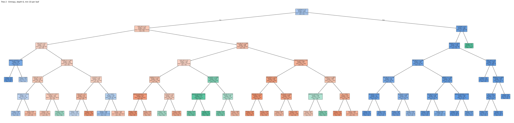
Tree 3: Gini, depth 4, without rarity This tree tests what the model can learn when the official rarity is hidden. It recovers most of the signal from set_position: cards numbered past about 69% of their set's highest number are the full-art and secret slots.
It then uses Pokémon popularity and Dex number to pick out the High cards: a frequently printed Pokémon from the first three generations (Dex number ≤ 292) in a late set slot is predicted High. Accuracy is 80.6%, only half a point below Tree 1, which had rarity available.
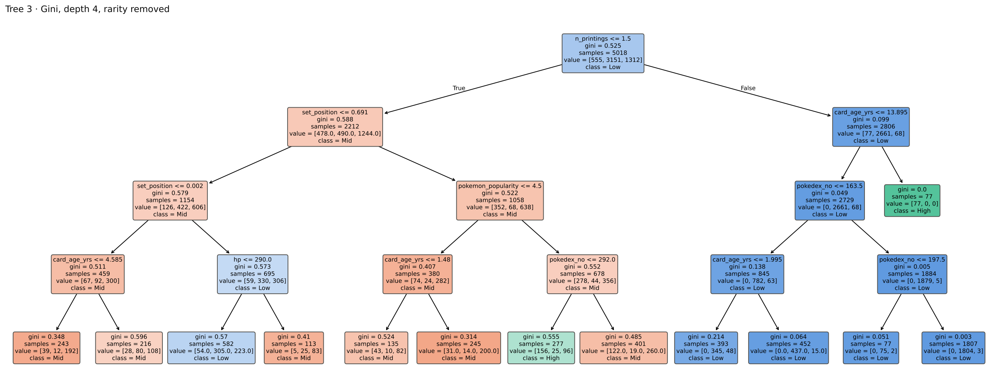
Confusion Matrices Rows are the true tier and columns the predicted tier, so the diagonal counts correct predictions. In all three trees, almost every mistake is between neighbouring tiers. Tree 2 sends only 7 High cards to Low and no Low cards to High. Most of its errors sit near the $1 and $10 cut-offs, where a few cents or dollars change the label.
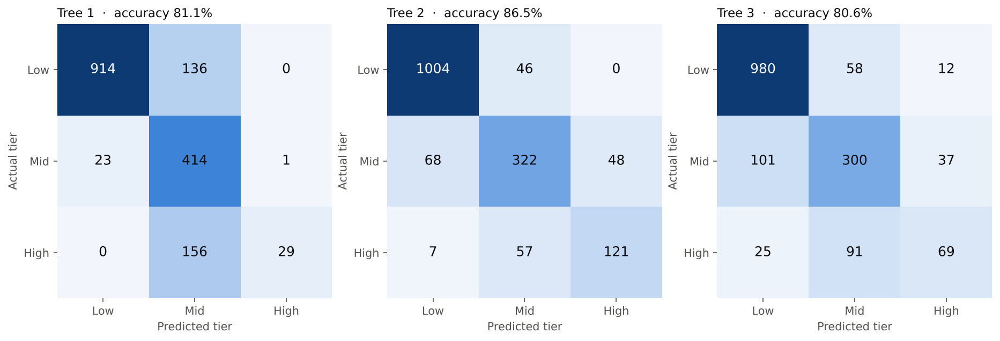
| Tree | Accuracy | Low prec. / recall | Mid prec. / recall | High prec. / recall |
|---|---|---|---|---|
| Tree 1 · Gini d3 | 81.1% | 0.98 / 0.87 | 0.59 / 0.95 | 0.97 / 0.16 |
| Tree 2 · Entropy d6 | 86.5% | 0.93 / 0.96 | 0.76 / 0.74 | 0.72 / 0.65 |
| Tree 3 · no rarity | 80.6% | 0.89 / 0.93 | 0.67 / 0.68 | 0.58 / 0.37 |
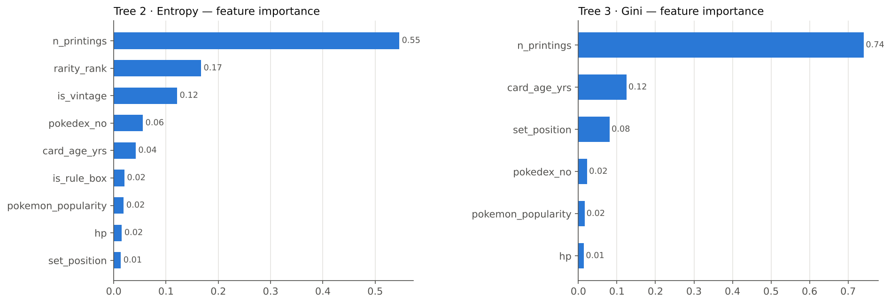
Feature importance = each feature's share of the total impurity reduction. Gameplay stats (HP, damage, retreat cost) contribute almost nothing.
Conclusion
Decision trees can sort Pokémon cards into Low, Mid and High price tiers with about 86% accuracy from printed information alone, well above the 63% you would get by guessing "under a dollar" for everything. The trees also make it clear why a card is priced the way it is.
- How a card is printed matters more than how it plays. Whether a card comes in both normal and reverse-holo versions was the most important feature in every tree. That one fact separates bulk commons and uncommons (95% under $1) from the holo-only rares and chase cards. HP, attack damage and retreat cost added almost nothing. Collectors price scarcity and art, not battle strength.
- Age is a shortcut to High. Every multi-printing vintage card (1999–2002) the tree saw was worth more than $10, and 46% of all priced vintage cards are High compared with 9% of modern ones. An old Base Set uncommon can outprice a brand-new ultra rare.
- Modern High cards are the hard part. Among modern ultra and secret rares, High and Mid overlap heavily. The tree needs extra cues to tell them apart: Special Illustration and Hyper rares, recently released sets, and popular Pokémon. A popular early-generation Pokémon in a late "secret" set slot is the clearest High signal the no-rarity tree found.
- Rarity can be inferred. With rarity removed, set position and Pokémon popularity recovered almost the same accuracy (80.6% vs 81.1%). The card number alone reveals much of what the rarity symbol says.
- Bigger trees are not better. The unlimited tree memorized its training data (99.8%) yet did no better on new cards than a 39-leaf tree. Limiting depth and leaf size gave a simpler model that generalizes just as well.
For a collector or seller, this means a short checklist predicts most of a card's value: Is it holo-only? Is it vintage? Is it a Special Illustration, Hyper or Secret rare? Is it a fan-favorite Pokémon? Cards that pass several of those checks are the ones to sleeve, grade, or price-check before selling. Cards that fail all of them can usually go in the bulk box.
Overview
Regression is a family of supervised models that learn how a set of input features relates to a target. Both models in this tab start from the same idea, a weighted sum of the features, but they answer different questions. Linear regression predicts a number. Logistic regression predicts a class.
- Linear Regression predicts a continuous numeric value. It assumes the target is a straight-line combination of the features: $$\hat{y} = b_0 + b_1 x_1 + b_2 x_2 + \cdots + b_k x_k$$ Each coefficient $b_j$ is the expected change in the target when feature $x_j$ goes up by one unit and the other features stay the same. The coefficients are chosen by ordinary least squares, which picks the line that makes the sum of squared errors $\sum (y - \hat{y})^2$ as small as possible. In this tab, linear regression predicts the market price of a card on a log scale.
- Logistic Regression is a classifier, despite the name. It predicts the probability that a record belongs to class 1, then turns that probability into a yes/no label. In this tab, it predicts whether a card is valuable (1) or not (0).
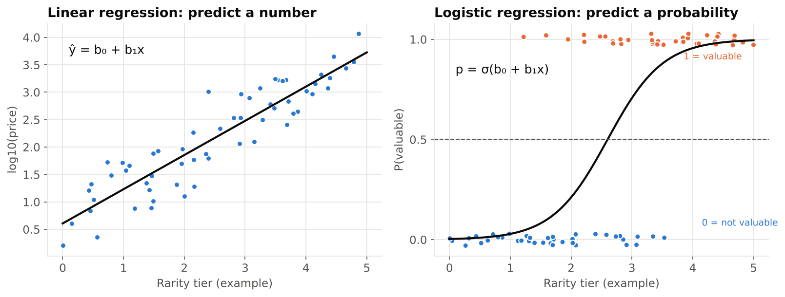
Linear regression fits a straight line to a numeric target (left). Logistic regression fits an S-shaped curve to a 0/1 target, so its output is always a probability between 0 and 1 (right). The data in this figure is for illustration only.
From a linear score to a probability: the sigmoid. Logistic regression first computes a linear score, exactly like linear regression: $$z = b_0 + b_1 x_1 + \cdots + b_k x_k$$ The score $z$ can be any number from $-\infty$ to $+\infty$, but a probability must lie between 0 and 1. The sigmoid (logistic) function squeezes the score into that range: $$p = \sigma(z) = \frac{1}{1 + e^{-z}}$$ Large positive scores give probabilities near 1, large negative scores give probabilities near 0, and $z = 0$ gives exactly 0.5. Read backwards, the score is the log-odds, $z = \ln\left(\frac{p}{1-p}\right)$. So logistic regression is a linear model of the log-odds, which is why each coefficient can be read as a change in the odds.
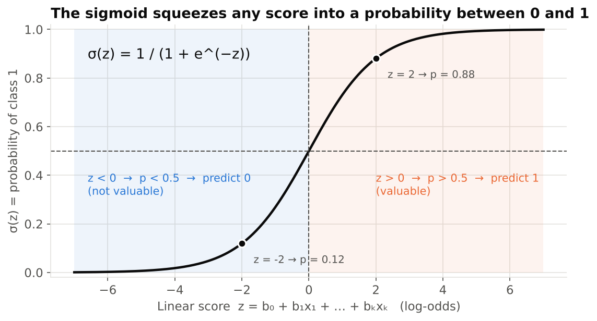
From a probability to a class. To make a decision, the probability is compared with a threshold, usually 0.5: $$\hat{y} = \begin{cases} 1 \text{ (valuable)} & \text{if } p \geq 0.5 \\ 0 \text{ (not valuable)} & \text{if } p < 0.5 \end{cases}$$ Because $\sigma(0) = 0.5$, this is the same as asking whether $z \geq 0$. A worked example from the fitted model: take a 2-year-old card with 200 HP, retreat cost 2, two attacks, and a top attack of 180 damage. At rarity tier 4 (for example, a V or ex card) the score is $z = -0.97$, so $p = 0.28$ and the card is predicted not valuable. The same card at tier 5 (an Illustration or Secret Rare) gets $z = +0.74$ and $p = 0.68$, so it is predicted valuable. The threshold can be moved: lowering it catches more valuable cards, at the cost of more false alarms.
How they differ.
| Linear Regression | Logistic Regression | |
|---|---|---|
| Task | Regression (predict a quantity) | Classification (predict a class) |
| Target | Continuous number | Two classes, coded 0/1 |
| Output | Any real number | Probability in (0, 1), then a label |
| Link | Identity: $\hat{y} = z$ | Sigmoid: $p = \sigma(z)$ |
| Fitting | Least squares (minimize squared error) | Maximum likelihood (minimize log-loss) |
| Coefficient meaning | Change in the target per unit of $x$ | Change in log-odds per unit of $x$; $e^{b}$ is an odds ratio |
| Evaluated with | RMSE, MAE, $R^2$ | Confusion matrix, accuracy, precision, recall |
Data Prep
Supervised learning needs labeled data. Each record must carry the correct answer, here the price or the valuable/not label, so the model can learn from it and be checked against it. Both models also need every feature to be numeric with no missing values.
The February 2025 snapshot (modern and vintage, 7213 cards together) is used, so each card appears only once. The data is prepared in the following steps:
- Pokémon cards only. Trainer and Energy cards have no HP or attacks, so they were dropped.
- One market price per card. The Holofoil market price is used if the card has one, otherwise the Normal price, otherwise the Reverse Holofoil price. Cards with no price at all were dropped.
- Text converted to numbers.
Num_AttacksandMax_Damageare parsed from the Attacks text ("Sweet Scent (), Sting (20)" gives 2 attacks and a max damage of 20).Card_Age_Yearsis the years from release date to price date.Rarity_Tiermaps the 23 rarity names to an ordered scale: 0 Common, 1 Uncommon, 2 Rare/Promo, 3 Rare Holo, 4 V/VMAX/ex/Ultra/Shiny/Radiant, 5 Illustration/Special Illustration/Secret/Rainbow/Hyper. HP and Retreat Cost are already numeric.
Linear regression needs a numeric target and logistic regression needs a two-class label, so two labels are built from the market price:
| Model | Features (X) | Target / Label (y) |
|---|---|---|
| Linear Regression | HP, Retreat_Cost, Num_Attacks, Max_Damage, Card_Age_Years, Rarity_Tier |
Log10_Price $= \log_{10}(\text{market price})$, numeric |
| Logistic Regression | HP, Retreat_Cost, Num_Attacks, Max_Damage, Card_Age_Years, Rarity_Tier |
Valuable = 1 if price $\geq \$5$, otherwise 0 |
The price is put on a log scale because prices run from \$0.02 to over \$1,000 and are heavily right-skewed, as shown in the Data Prep tab. On the log scale a straight line fits much better, and each coefficient becomes a percentage change instead of a dollar change. The \$5 cut-off is roughly where a single card is worth pulling out of bulk to sell or protect on its own. 15.8% of cards are valuable, so the two classes are imbalanced.
This leaves 5584 labeled cards (5270 modern, 314 vintage). ID, Name, Era, Rarity and Market_Price are kept in the file for reference only and are not given to the models. The labeled data can be found here.
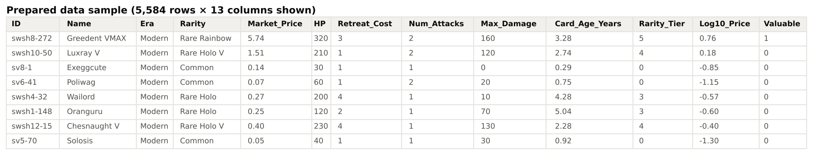
Next is to split the dataset into a training set and testing set with train_test_split(test_size=0.20, random_state=42, stratify=Valuable).
- Training Set (80%, 4467 cards) is the only data the models see while learning their coefficients.
- Testing Set (20%, 1117 cards) is held back and used once, to score the models on cards they have never seen.
- Stratified sampling keeps the share of valuable cards the same in both sets (706 of 4467 and 176 of 1117, both about 15.8%).
- Disjoint. The two sets must not share any card. If a card were in both, the model could simply remember its price, and the test score would overstate how well it works on new cards (data leakage). The code checks that no card ID appears in both sets before fitting.
The same split is used for linear regression, logistic regression, and the Naive Bayes comparison, so their scores can be compared fairly.
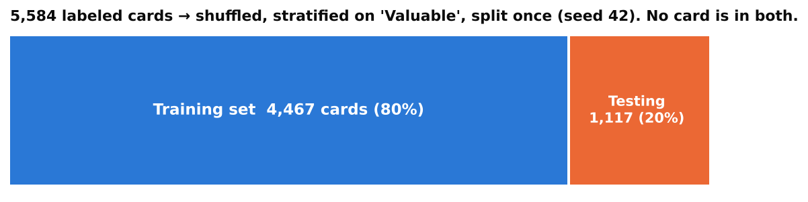
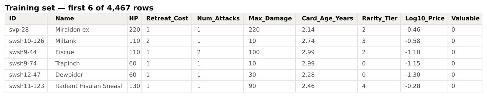
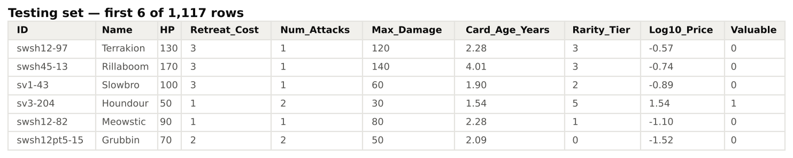
Code
The code of regression analysis can be found here. Section 1 is used to preprocess the data: it keeps the Pokémon cards, builds one market price per card, converts the text columns into numerical features, and creates the two labels.
Section 3 splits the data into training set and testing set, fits LinearRegression on Log10_Price, fits LogisticRegression on Valuable, and fits a GaussianNB on the same split for comparison.
Section 2 holds the plotting functions for all the figures in this tab. All metrics are saved to regression_results.json.
Results
Linear regression. On the 1,117 held-out test cards, the model explains 75% of the variation in log price ($R^2 = 0.750$). The test RMSE is 0.473 and the MAE is 0.361 (in $\log_{10}$ dollars). The RMSE is half of the 0.947 you would get by predicting the average price for every card. An MAE of 0.361 on the log scale means a typical prediction is off by a factor of about 2.3 ($10^{0.361}$). Because most cards are cheap, the median miss is only \$0.18.
| Metric (testing set) | Linear Regression | Predict the mean |
|---|---|---|
| $R^2$ | 0.750 | 0.000 |
| RMSE ($\log_{10}$ dollars) | 0.473 | 0.947 |
| MAE ($\log_{10}$ dollars) | 0.361 | - |
| Median absolute error (dollars) | \$0.18 | - |
The plot below shows predicted against actual price for the testing set. Points on the dashed line are perfect predictions. The model tracks cheap and mid-priced cards well but underpredicts the expensive cards: above about \$20 the points flatten out below the line. What makes a card a \$300 chase card (the specific Pokémon, the artwork, the set) is not in these six features.
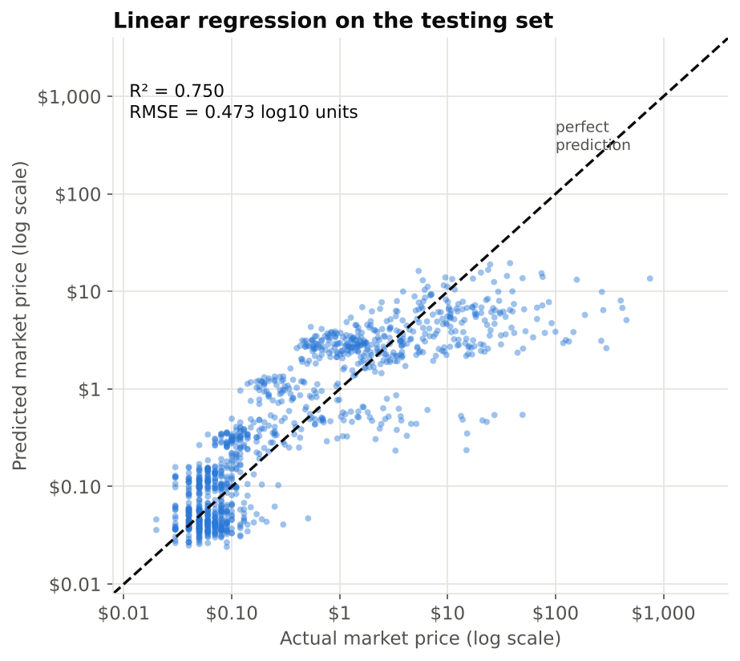
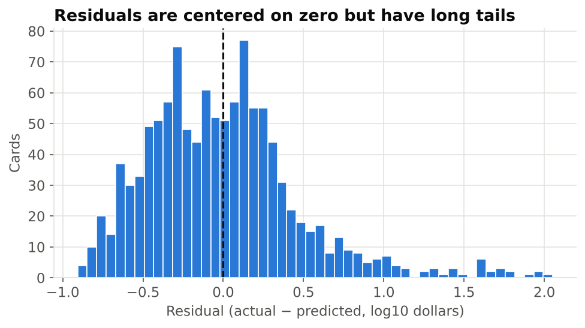
The residuals are centered on zero, with a long right tail from the underpredicted chase cards.
Because the target is $\log_{10}(\text{price})$, a coefficient $b$ means the price is multiplied by $10^{b}$ for each one-unit increase in that feature, with the other features held the same.
- Rarity_Tier ($b = 0.432$). Each step up the rarity scale multiplies the predicted price by $10^{0.432} \approx 2.70$. Going from a Common (tier 0) to a chase rare (tier 5) raises the predicted price by a factor of about 144, for an otherwise identical card. Rarity is by far the strongest driver of price.
- Card_Age_Years ($b = 0.056$). Each extra year since release raises the predicted price by about 14% ($10^{0.056} \approx 1.136$). Older cards go out of print and get scarcer, so they cost more, even after accounting for rarity.
- Retreat_Cost ($b = -0.064$) is a smaller effect: each extra energy to retreat lowers the price by about 14%. HP and Max_Damage have tiny coefficients because they are counted in single points (+100 HP is only about ×1.30).
Logistic regression. On the same 1,117 test cards, logistic regression scored 92.1% accuracy, (928 + 101) / 1117. Always guessing "not valuable" would score 84.2%, so the model adds about 8 percentage points over that baseline.
Confusion Matrix Rows are each card's actual class; columns are what the model predicted. The diagonal holds the correct predictions.
- When it says valuable, it is usually right. Precision is 0.89: only 13 of the 941 not-valuable cards were flagged as valuable.
- It misses some valuable cards. Recall is 0.57: 75 of the 176 valuable cards were predicted not valuable. These are mostly cards that are valuable for reasons the features don't capture, the same chase cards the linear model underpredicts.
- The threshold can be tuned. If missing a valuable card is costly, lowering the threshold below 0.5 trades some precision for higher recall. The ROC AUC of 0.935 shows the model ranks valuable cards above the others well across all thresholds.
What one coefficient means for the odds. The coefficient of Rarity_Tier is $b = 1.71$. Each step up the rarity scale adds 1.71 to the log-odds that a card is valuable, so it multiplies the odds by $e^{1.71} \approx 5.5$, holding the other features fixed. For example, if a tier-3 card has odds of 1 to 9 of being worth \$5 or more ($p = 0.10$), the same card at tier 4 has odds of about 5.5 to 9 ($p \approx 0.38$). Likewise, Card_Age_Years has an odds ratio of $e^{0.188} \approx 1.21$: each year of age raises the odds of being valuable by about 21%.
Comparison with Naive Bayes. The Naive Bayes tab used Multinomial NB to sort cards into three price tiers (Low / Mid / High) and scored 80.4% accuracy against a 62.3% baseline. That is a harder, three-class task on a different split, so the numbers are not directly comparable. To compare fairly, a Gaussian NB (the NB variant for continuous features) was trained on the same six features, the same \$5 label, and the same training/testing split as the logistic regression.
| Metric (testing set) | Logistic Regression | Gaussian NB |
|---|---|---|
| Accuracy | 0.921 | 0.835 |
| Precision (valuable) | 0.89 | 0.48 |
| Recall (valuable) | 0.57 | 0.64 |
| F1 (valuable) | 0.70 | 0.55 |
| ROC AUC | 0.935 | 0.893 |
| Confusion [TN, FP / FN, TP] | 928, 13 / 75, 101 | 821, 120 / 64, 112 |
Logistic regression is the stronger model here. Naive Bayes finds slightly more of the valuable cards (112 vs 101), but it pays for that with 120 false alarms instead of 13, and its accuracy (83.5%) falls below the "always say not valuable" baseline. The likely reason is the naive assumption that features are independent within each class. Here they clearly are not: HP, Max_Damage and Rarity_Tier rise together (V and ex cards are high-HP, hard-hitting, and rare), so Naive Bayes counts the same evidence several times and becomes overconfident. Logistic regression fits all the weights together, so correlated features share the credit. The same idea shows up in the Naive Bayes tab, where High cards were hard to catch: both NB models struggled at the top of the price range.
Conclusions
A card's printed attributes explain about three quarters of the variation in its (log) price, and they flag cards worth \$5 or more correctly about 9 times in 10. For a collector or investor, this says several things:
- Rarity is the price. Each step up the rarity ladder multiplies the expected price by about 2.7 and the odds of a card being worth \$5 or more by about 5.5. This agrees with the Naive Bayes and Decision Tree tabs, and puts a number on it.
- Age adds value. Even with rarity held fixed, older cards cost about 14% more per year. Sets go out of print, the supply of clean copies shrinks, and prices drift up.
- Game stats barely matter for price. HP, attack damage and number of attacks have tiny coefficients once rarity is known. Collectors pay for scarcity and artwork, not playability.
- The models can't spot the chase cards. Prices can be estimated to within a factor of about 2.3, but the true chase cards (a Charizard, a popular Illustration Rare) are the ones the linear model underpredicts and the logistic model misses. Their prices depend on which Pokémon it is and how much people like the art. Adding Pokémon popularity or set position, which helped the Decision Tree tab, would be the natural next step.
- Correlated features favor logistic regression. For the yes/no question "is this card worth \$5?", logistic regression beat Naive Bayes on accuracy, precision, F1 and AUC, because it learns the weights of correlated features together.
In practical terms, the logistic model can be used as a high-precision filter. A card it calls valuable is almost always worth pulling out and price-checking. The linear model gives a rough price estimate, and the gap between that estimate and the real market price is a starting point for finding cards the market may be over- or under-valuing.
Overview
Boosting is an ensemble method: it builds one strong classifier out of many weak ones. Unlike a single decision tree, a boosted model is a team of small trees that vote together. What makes boosting different from other ensembles is that the trees are built one after another, and each new tree concentrates on the cards that the earlier trees got wrong.
- Bagging (bootstrap aggregating, the idea behind Random Forests) trains every tree independently and in parallel, each on its own random resample of the training data. The trees are usually deep, and every tree gets an equal vote. Averaging many noisy but unbiased trees mainly reduces variance.
- Boosting trains trees in sequence. Every tree sees the same rows, but the rows are re-weighted after each round so that the cards misclassified so far count for more. The trees are usually very simple, and each tree's vote is weighted by how accurate it was. Adding up many small corrections mainly reduces bias.
Bagging trains trees in parallel on bootstrap samples and takes an equal-weight vote (left). AdaBoost trains stumps one after another: the rows each stump gets wrong are up-weighted for the next round, and the final prediction is a vote weighted by each stump's $\alpha$ (right).
Decision stumps: the weak learners. A decision stump is a decision tree with depth 1: one split and two leaves. It asks a single yes/no question, such as "Is the rarity Illustration Rare?" or "Is HP $\leq 185$?", and predicts the weighted majority class on each side. On its own a stump is a weak learner, only somewhat better than guessing. AdaBoost only needs each stump to beat chance on the current weighting of the data, i.e. a weighted error $\varepsilon < 0.5$.
How AdaBoost reweights the rows. The labels are coded as $y_i \in \{-1, +1\}$. Every one of the $N$ training rows starts with the same weight $w_i = 1/N$. Then, for each round $t = 1, \dots, T$:
- Fit a stump $h_t$ using the current row weights. The stump picks the single split with the lowest weighted error.
- Measure its weighted error. $\varepsilon_t$ is the total weight of the rows it gets wrong (the weights sum to 1): $$\varepsilon_t = \sum_{i:\, h_t(x_i) \neq y_i} w_i$$
- Give the stump a say, $\alpha_t$ (see below). Low error gives a big $\alpha_t$; error near 0.5 gives $\alpha_t$ near 0.
- Reweight the rows. Misclassified rows are multiplied by $e^{\alpha_t}$ (they get heavier), correctly classified rows are multiplied by $e^{-\alpha_t}$ (they get lighter), and the weights are renormalized to sum to 1: $$w_i \leftarrow \frac{w_i \, e^{-\alpha_t \, y_i \, h_t(x_i)}}{\sum_j w_j \, e^{-\alpha_t \, y_j \, h_t(x_j)}}$$ Since $y_i h_t(x_i) = +1$ when the stump is right and $-1$ when it is wrong, the next stump is pushed toward the "hard" rows.
What the weight $\alpha$ of each stump means. $\alpha_t$ is the weight of stump $t$'s vote, i.e. how much the final model trusts it. It depends only on the stump's weighted error: $$\alpha_t = \frac{1}{2} \ln\left(\frac{1 - \varepsilon_t}{\varepsilon_t}\right)$$ An accurate stump ($\varepsilon = 0.10$) gets $\alpha \approx 1.10$, a stump barely better than chance ($\varepsilon = 0.40$) gets $\alpha \approx 0.20$, and a coin flip ($\varepsilon = 0.5$) gets $\alpha = 0$, so it has no say at all. Above 0.5, $\alpha$ would be negative, meaning "do the opposite of what this stump says". The same $\alpha_t$ also sets how hard the row weights move, so a confident stump changes the data a lot for the next round and a weak one barely changes it.
A note on scikit-learn: AdaBoostClassifier uses the SAMME algorithm, where $\alpha_t = \eta \cdot \ln\left((1 - \varepsilon_t)/\varepsilon_t\right)$ and $\eta$ is the learning_rate. For two classes this is the formula above scaled by $2\eta$, so it ranks the stumps the same way and gives the same predictions when $\eta = 1$.
A smaller learning rate shrinks every $\alpha$, so each round moves the model less and more rounds are needed.
The final weighted vote. To classify a new card, every stump votes $+1$ or $-1$, each vote is multiplied by that stump's $\alpha$, and the votes are added up. The sign of the total is the prediction: $$H(x) = \text{sign}\left(\sum_{t=1}^{T} \alpha_t \, h_t(x)\right)$$ For example, if three stumps vote Yes ($+1$), No ($-1$), Yes ($+1$) with $\alpha = 1.75, 0.50, 0.67$, the score is $1.75 - 0.50 + 0.67 = +1.92 > 0$, so the prediction is Yes. In the card model below, the very first stump asked "Is the rarity Illustration Rare?" and received $\alpha = 1.75$, the loudest single vote in the whole ensemble.
Data Prep
Supervised learning needs labeled data. Each record must carry the correct answer (the label) so the model can learn which feature patterns go with which class, and the labeled data is split into a Training Set (to build the model) and a Testing Set (to test it).
The February 2025 snapshot (modern and vintage, 7213 cards together) is used, so each card appears only once. The label is built from the market price:
- One price per card.
Best Market Priceis the highest market price among a card's printings (Normal, Reverse Holofoil, Holofoil). - Label.
High Value= Yes if the best market price is $\geq \$5$, otherwise No. Just like the Regression tab, \$5 is roughly where a single card is worth pulling out of bulk. - Rows dropped. 522 cards had no market price at all, so they have no label and were dropped. That leaves 6691 labeled cards, and 17.2% of them are High Value, so the classes are imbalanced.
- No leakage. The price columns are used only to build the label. None of them is given to the model.
A sample of the raw data that is used can be found here.
The features are built from the printed information on the card. The cleaned and labeled data can be found here.
| Feature | Built from | Meaning |
|---|---|---|
HP, Retreat Cost | HP, Retreat Cost | Gameplay stats (0 for Trainers and Energy) |
Release Year | Release Date | Year the set came out |
Num Attacks, Max Damage | Attacks | Number of attacks and the largest printed damage ("Line Force (50+)" gives 50) |
Era | File | Modern or Vintage |
Supertype, Rarity | Supertype, Rarity | Categories; a missing rarity becomes "Unknown" |
Type, Weakness | Types, Weaknesses | Primary energy type and weakness type; "None" for Trainers and Energy |
Subtypes | Subtypes | Comma-separated list, e.g. "Basic, V" or "Stage 2, ex" |
Best Market Price is shown for reference only: it defines the label and is dropped before modeling.
Turning categories into numbers. AdaBoost in scikit-learn (and the stumps inside it) only accepts numeric inputs, so the text columns have to be converted first.
Mapping categories to integers (Fire = 1, Water = 2, ...) would invent an order that doesn't exist, so one-hot encoding is used instead: every category gets its own 0/1 column.
A Water-type card gets Type_Water = 1 and 0 in every other Type_ column. This was done with pd.get_dummies for Era, Supertype, Rarity, Type and Weakness.
Subtypes can hold several values at once, so it was multi-hot encoded: one 0/1 column for each of 18 common subtypes (Subtype_V, Subtype_ex, Subtype_Stage 2, ...), and one card can have several 1s.
After encoding, every card is a row of 72 numeric features.
Before (text categories) and after (one 0/1 column per category, subset shown) one-hot encoding. The step in Section 2 of the code is:
def encode(c):
X = c[NUMERIC].copy() # HP, Retreat Cost, Release Year, ...
oh = pd.get_dummies(c[CATEGORICAL], prefix=CATEGORICAL, dtype=int) # one-hot
subs = c["Subtypes"].str.split(r",\s*")
for s in KEEP_SUBTYPES: # multi-hot
X[f"Subtype_{s}"] = subs.apply(lambda lst: int(s in lst))
return pd.concat([X, oh], axis=1)The labeled data with numeric features can be found here.
Next is to split the dataset into a training set and testing set with train_test_split(test_size=0.20, random_state=42, stratify=y).
- Training Set (80%, 5352 cards) is the only data the model sees while choosing its stumps and their weights. All tuning (cross-validation and the validation curve in Results) also uses only the training set.
- Testing Set (20%, 1339 cards) is held back and used once, at the very end, to score the model on cards it has never seen.
- Stratified sampling keeps the share of High Value cards the same in both sets (about 17.2%).
- Disjoint. The two sets must not share any card. If a card were in both, the model could simply remember its label, and the test score would measure memory instead of how well it works on new cards. An ensemble of hundreds of stumps can memorize a lot, so this matters even more here. The code checks that no row and no card ID appears in both sets before fitting.
Code
The code of AdaBoost analysis can be found here. Section 1 loads the February snapshot and builds the High Value label. Section 2 cleans the data and converts the qualitative features into one-hot and multi-hot numerical columns.
Section 3 splits the data into training set and testing set. Section 4 fits AdaBoostClassifier with decision stumps (DecisionTreeClassifier(max_depth=1)), tunes n_estimators and learning_rate with 5-fold cross-validation on the training set, and tracks validation accuracy round by round with staged_predict.
Section 5 fits a decision tree on the same split for comparison. Section 6 scores both models on the testing set and plots the confusion matrices, the comparison and the stump weights. Section 7 re-scores the test cards with the March 2025 prices.
All metrics are saved to adaboost_results.json. The figures in the Overview are made by this code.
Results
On the 1,339 held-out test cards, AdaBoost scored 91.3% accuracy, (1079 + 143) / 1339. Always guessing "not High Value" would score 82.8%, so the model adds about 8.4 percentage points over that baseline and cuts the number of errors roughly in half (from 230 to 117).
Confusion Matrix Rows are each card's actual class; columns are what the model predicted. The diagonal holds the correct predictions.
- Cheap cards are easy. 1079 of the 1109 cards under \$5 (97%) were correctly called No.
- When it says High Value, it is usually right. Precision is 0.83: only 30 cheap cards were flagged.
- It misses some valuable cards. Recall is 0.62: 87 of the 230 cards worth \$5 or more were predicted No. These are valuable cards whose printed traits look ordinary, such as playable Uncommons or Rares of popular Pokémon. The balanced accuracy (the average recall of the two classes) is 79.7%.
Tuning the number of rounds and the learning rate. Every combination of 6 values of n_estimators and 5 values of learning_rate was scored with 5-fold stratified cross-validation on the training set.
The best setting is n_estimators = 800 and learning_rate = 1.0, with a cross-validated accuracy of 0.917, only just ahead of 400 rounds (0.916). Small learning rates with few rounds sit at 0.828, which is exactly the "always No" rate: the shrunken stumps never build up enough total vote to flip any card to Yes.
Validation accuracy as rounds are added. To watch the ensemble grow, 20% of the training set was held out as a validation set. Models with up to 800 rounds were trained on the other 80%, and the ensemble was scored on the validation set after every single round.
| Learning rate | 1 round | 25 rounds | 100 rounds | 200 rounds | 400 rounds | 800 rounds |
|---|---|---|---|---|---|---|
| 0.1 | 0.849 | 0.828 | 0.828 | 0.828 | 0.877 | 0.890 |
| 0.5 | 0.849 | 0.860 | 0.890 | 0.894 | 0.894 | 0.906 |
| 1.0 | 0.849 | 0.890 | 0.894 | 0.902 | 0.917 | 0.918 |
With learning rate 1.0, accuracy climbs quickly over the first 25 rounds and levels off around 0.917 from about 400 rounds. Learning rate 0.5 follows the same path more slowly, and learning rate 0.1 stays at the "always No" line for about 250 rounds. The curves flatten instead of falling, so adding rounds did not cause visible overfitting in this range.
What the stumps learned. The first five stumps of the final model (with $\alpha$ as scikit-learn computes it, $\eta = 1$):
| Round | Question | Weighted error $\varepsilon$ | $\alpha$ |
|---|---|---|---|
| 1 | Rarity = Illustration Rare? | 0.149 | 1.75 |
| 2 | Rarity = Common? | 0.378 | 0.50 |
| 3 | Era = Vintage? | 0.338 | 0.67 |
| 4 | Rarity = Uncommon? | 0.343 | 0.65 |
| 5 | HP $\leq$ 185? | 0.333 | 0.69 |
Adding up the $\alpha$ of all the stumps that split on each feature shows that rarity and release year/era dominate. Later stumps go after small groups: Rarity_Unknown covers only 12 vintage cards, but late rounds kept re-splitting on it as the weights piled onto a few hard rows, which is typical boosting behavior.
Comparison with the Decision Tree. The Decision Trees tab sorted cards into three price tiers (Low / Mid / High), and its best tree (Tree 2, entropy, depth 6) scored 86.5% accuracy against a 62.8% baseline.
That is a harder, three-class task on a different split, so the numbers are not directly comparable. To compare fairly, a decision tree was trained on the same 72 features, the same \$5 label, and the same training/testing split as AdaBoost,
with max_depth and min_samples_leaf tuned by the same 5-fold cross-validation (best: depth 10, at least 5 cards per leaf).
| Metric (testing set) | AdaBoost (800 stumps) | Decision Tree (depth 10) |
|---|---|---|
| Accuracy | 0.913 | 0.914 |
| Balanced accuracy | 0.797 | 0.788 |
| Precision (High Value) | 0.83 | 0.86 |
| Recall (High Value) | 0.62 | 0.60 |
| F1 (High Value) | 0.710 | 0.704 |
| 5-fold CV accuracy (training set) | 0.917 | 0.916 |
| Accuracy on vintage test cards (64) | 0.969 | 0.906 |
| Confusion [TN, FP / FN, TP] | 1079, 30 / 87, 143 | 1087, 22 / 93, 137 |
On accuracy the two models are essentially tied: the decision tree is ahead by 0.15 percentage points, which is only 2 cards out of 1,339 and well within run-to-run noise. They make different kinds of mistakes, though. AdaBoost finds 6 more of the valuable cards, has the higher balanced accuracy and F1, and did clearly better on the small vintage group (4 more vintage cards correct). The tree is more cautious and raises 8 fewer false alarms. If the goal is "don't let a \$5 card slip into the bulk box", AdaBoost is slightly better; if the goal is "only flag a card when you're sure", the tree is.
A one-month check. As an extra test, the same test cards were re-labeled with the March 2025 prices and scored with the February models. AdaBoost scored 91.0% and the tree 91.2%, so what the models learned is not tied to a single snapshot.
Conclusions
Using only what a collector can see on the card, AdaBoost labeled about 9 cards in 10 correctly as worth \$5 or more or not. It caught 62% of the valuable cards, and when it called a card valuable it was right 83% of the time. For a collector or investor, this says several things:
- Rarity is the strongest signal, and the modern chase rarities are near-sure bets. The very first stump asked "Is it an Illustration Rare?" and earned the biggest vote in the model. 96% of Special Illustration Rares, 86% of Illustration Rares, 80% of Hyper Rares and 75% of Rainbow Rares are worth \$5 or more, compared with only 2–3% of Commons and Uncommons. In the modern era, a card's value is largely decided by the rarity tier it is printed at.
- Era adds value on its own. About half of the priced vintage cards (1999–2002) are worth \$5 or more, compared with 15% of modern cards. Stumps on "Era = Vintage" and "Release Year $\leq$ 2010" were among the earliest and strongest, and AdaBoost got 97% of the held-out vintage cards right. This agrees with the Decision Trees and Regression tabs.
- Game stats barely matter for price. HP appeared once among the first stumps, but rarity and era carried almost all of the total vote. Collectors pay for scarcity and artwork, not playability.
- The model can't spot the chase cards inside a rarity. Most errors are valuable cards that look ordinary: a competitively played Uncommon, a Rare of a fan-favorite Pokémon, a vintage card valued for nostalgia. Pokémon popularity, tournament play and condition are not in these features. Adding Pokémon popularity or set position, which helped the Decision Tree tab, is the natural next step to catch the missed 38%.
- Boosting matched the tree, but did not beat it. 800 one-question stumps matched a tuned depth-10 tree on accuracy and were a little better at finding the valuable minority, while the tree is far easier to read. On this data the features carry most of the signal, so which features the model gets matters more than which model is used.
In practical terms, AdaBoost can be used as a first-pass sorter that leans toward catching valuable cards. A card it calls High Value is worth pulling out and price-checking, and lowering its decision threshold would catch even more of them at the cost of more false alarms.